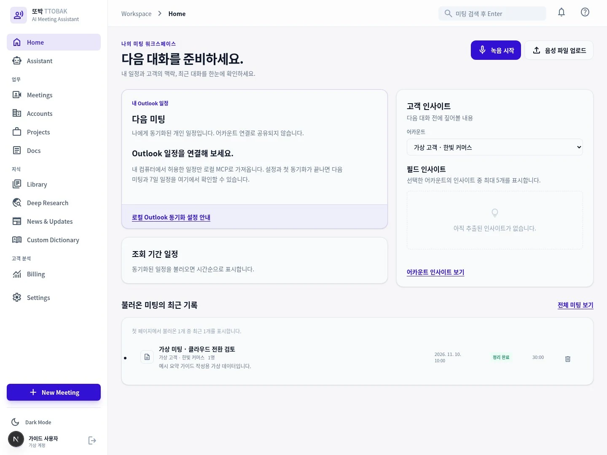
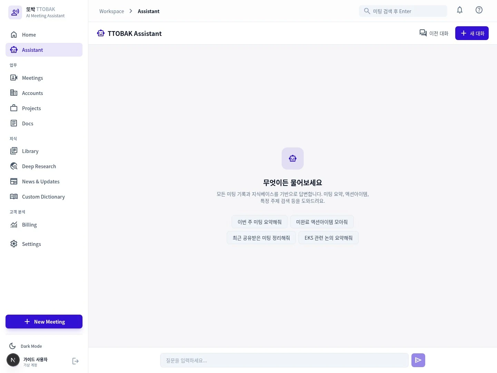
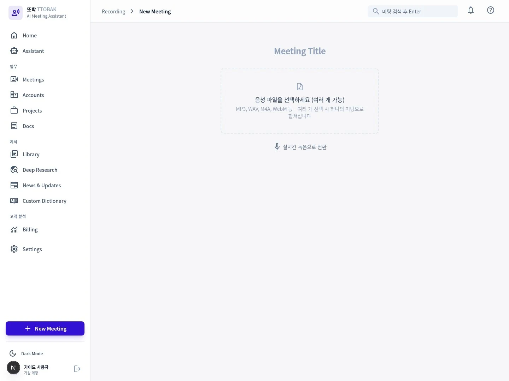
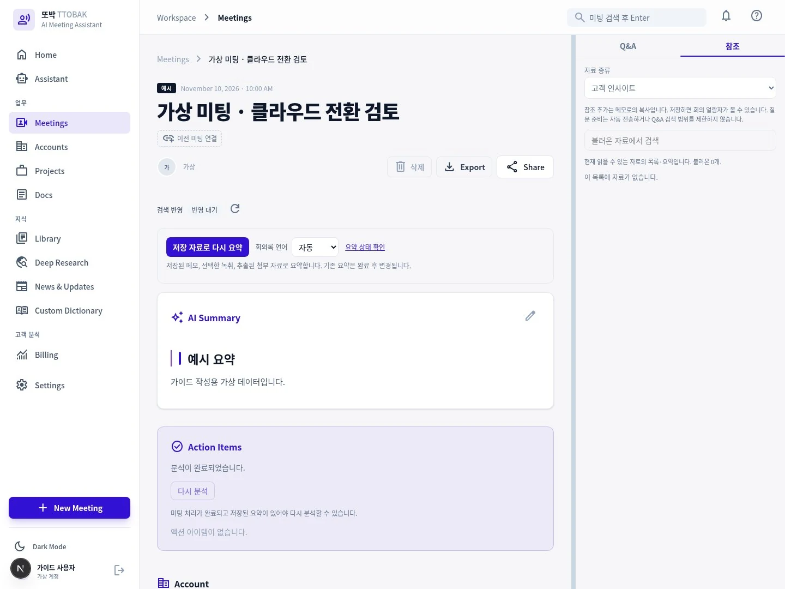
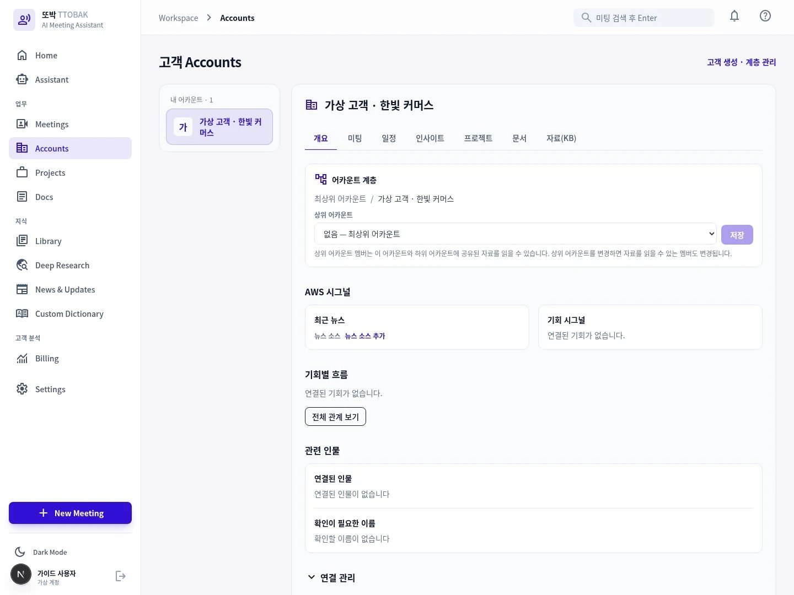
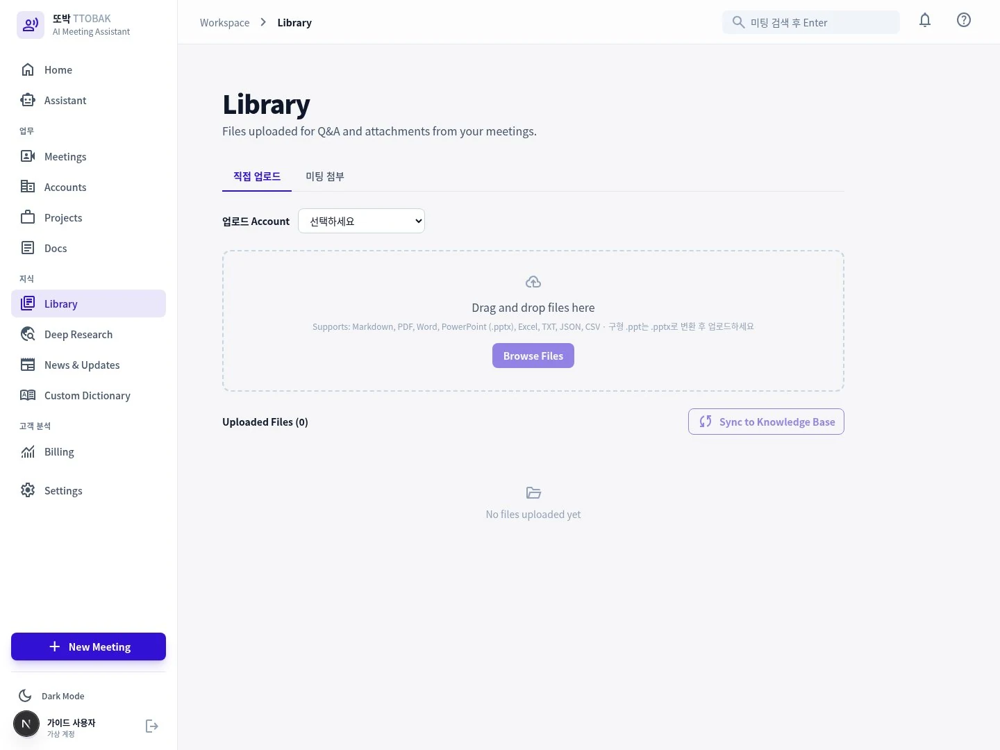
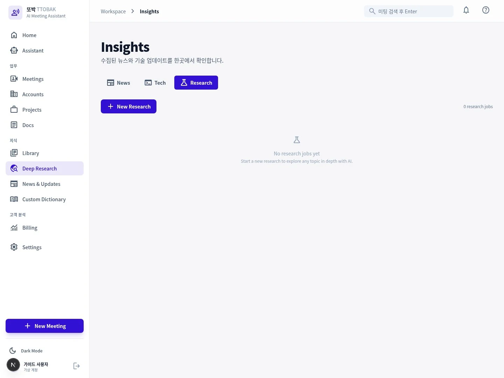
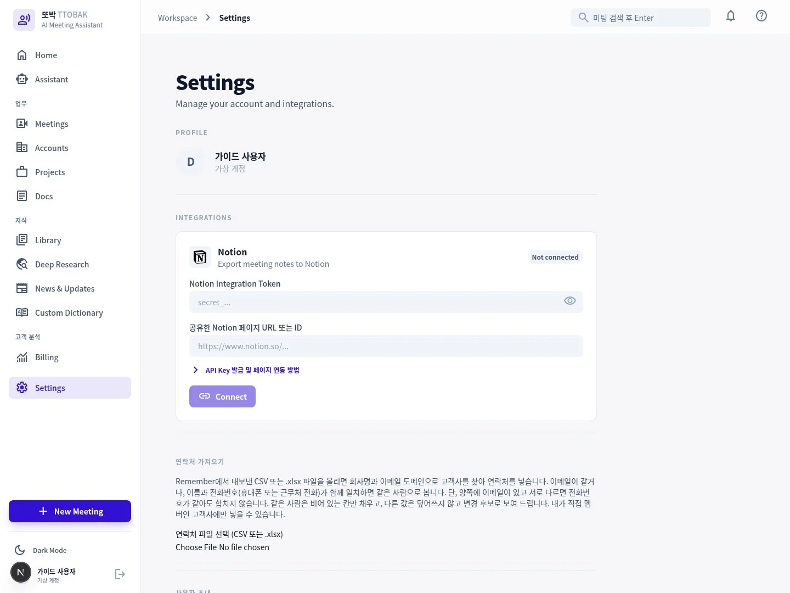

TTOBAK DOCUMENTATION / PRODUCT & OPERATIONS
회의의 기록을
다음 업무의 근거로.
또박의 모든 메뉴를 이해하고, 올바른 자료와 권한으로 AI를 사용하세요. 처음 녹음하는 사용자부터 고객·프로젝트 담당자와 관리자까지 함께 보는 제품 가이드입니다.
현재 소스의 화면·처리 흐름·기본 모델 설정을 확인했습니다. 기능의 운영 활성화, 조직 정책, 로그인 계정의 권한에 따라 보이는 항목이 달라집니다. 아래 화면은 앱을 직접 실행해 캡처했습니다. 메뉴·아이콘·배치를 그대로 담았으며, 고객·연락처·회의는 가이드용 예시 데이터입니다. 각 화면의 ‘화면 크게 보기’에서 원본 크기로 확인할 수 있습니다.
01 / GETTING STARTED
시작하기
또박은 녹음·문서·고객 맥락을 연결해 회의록과 다음 행동을 만드는 업무 공간입니다. 처음에는 하나의 가상 미팅으로 녹음부터 검토·공유까지의 흐름을 익히세요.
로그인과 첫 사용
- 조직 관리자의 사용자 초대를 받습니다. 초대된 이메일과 임시 비밀번호로 로그인하고, 처음 로그인할 때 새 비밀번호를 설정합니다. 직접 가입으로 조직에 들어가는 흐름은 제공하지 않습니다.
- 로그인 이메일과 조직의 이용 정책을 확인합니다. 이메일 확인 안내가 나오면 완료합니다. 공유 초대의 대상 이메일과 현재 로그인 계정이 다르면 자료가 보이지 않을 수 있습니다.
- Home에서 업무를 시작합니다. 새 녹음은 New Meeting → 실시간 녹음, 기존 자료는 음성 파일 업로드로 시작합니다.
- 완료된 미팅을 검토합니다. 전사·요약 처리 후 Meetings에서 미팅을 엽니다. 제목, 고객 분류, 회의록, 화자, 액션 아이템을 실제 내용과 대조합니다.
- 검토한 내용만 필요한 범위에 공유합니다. 고객 연결, 프로젝트 연결, 공유의 차이를 먼저 확인합니다. 외부로 전달할 문서는 개인 Docs에 초안을 만들고 사람이 검토합니다.
비밀번호를 잊었다면 로그인 화면의 비밀번호를 잊으셨나요?를 눌러 이메일로 인증 코드를 받고 새 비밀번호를 설정합니다. 코드 만료 시 새 코드를 요청합니다. 초대 미완료·임시 비밀번호 만료·계정 비활성화 문제는 관리자에게 초대 재발송 또는 계정 상태 확인을 요청하세요.
마이크 입력 · 로그인 계정 · 고객 선택 · 저장 완료 상태 · 공유 범위. 녹음 자체와 AI 처리의 완료 상태는 별개입니다.
메뉴를 업무 목적에 맞게 선택하세요
| 업무 목적 | 화면 | 여기서 하는 일 |
|---|---|---|
| 오늘 할 일을 찾기 | Home | 다가오는 개인 미팅, 최근 미팅, 고객 관련 인사이트 확인 |
| 자료에 질문하기 | Assistant | 접근 가능한 미팅과 지식 자료를 대상으로 질문 |
| 회의 내용을 검토하기 | Meetings | 회의록·녹취·내 메모·첨부·Q&A·액션 아이템 |
| 고객별로 일하기 | Accounts | 고객 개요, 멤버, 연락처, 공동 일정, 문서와 관계 |
| 과제별로 모으기 | Projects | 여러 고객과 미팅·리서치를 하나의 프로젝트로 연결 |
| 내 결과물을 작성하기 | Docs | 개인 Markdown 문서와 PDF·슬라이드 관리 |
| AI가 참고할 자료 관리 | Library | 직접 업로드 파일과 미팅 첨부, 검색 준비 상태 확인 |
| 새로운 주제 조사 | Deep Research | 리서치 범위·목차를 정하고 근거가 있는 보고서 작성 |
| 변화를 따라가기 | News & Updates | 수집한 뉴스·업데이트와 출처 확인 |
| 전문 용어를 맞추기 | Custom Dictionary | 개인·고객·공통 용어와 음성 인식 사전 상태 관리 |
| 비용 분석 | Billing · 조건부 표시 | 활성화된 비용 분석 서비스나 companion으로 이동 |
| 내 환경·조직 설정 | Settings | 프로필, 연동, 연락처 가져오기, 소스와 관리자 기능 |
미팅·문서·고객·프로젝트는 서로 다른 객체입니다
미팅은 하나의 대화와 그 근거를 보관합니다. Docs는 내가 작성하거나 업로드한 문서입니다. Account는 고객·조직의 공동 업무 공간이고, Project는 하나의 과제나 기회를 묶습니다. 같은 이름이 붙어 있어도 각각의 접근 권한과 공유 상태를 확인해야 합니다.
02 / HOME
Home · 업무 시작 화면
Home은 최근 진행 상황을 빠르게 파악하는 화면입니다. 모든 미팅을 관리하는 Meetings와 달리, 다음 업무로 이동하는 시작점으로 사용합니다.
화면 경로 / · 로그인 후 Home

화면을 읽고 이동하는 순서
- 다가오는 개인 미팅의 일정과 고객 분류를 확인합니다. 가져온 캘린더 일정이 없으면 안내되는 상태와 동기화 여부를 먼저 봅니다.
- 최근 미팅에서 처리 중인 항목과 완료된 항목을 구분합니다. 완료된 미팅을 선택해 회의록 작업 공간으로 이동합니다.
- 고객을 선택할 수 있는 영역에서는 관심 있는 Account를 고릅니다. 선택은 업무 맥락을 좁히는 필터이며 새로운 공유 권한을 만들지 않습니다.
- 고객 관련 인사이트를 확인한 뒤 원래 미팅·자료를 열어 근거를 검토합니다.
- 새 미팅을 만들거나 Meetings로 이동해 더 오래된 기록을 찾습니다.
왜 목록마다 상태가 다를 수 있나요?
최근 미팅, 고객 목록과 개인 캘린더는 별도의 데이터 요청입니다. 한 영역에서 오류가 나도 다른 영역이 정상일 수 있습니다. 실패한 영역의 다시 시도를 사용하세요. 일부 미팅만 보이는 최근 목록을 전체 보관함으로 해석하지 마세요.
업로드 직후의 미팅은 완료된 요약이 없어도 목록에 나타날 수 있습니다. 처리 상태를 갱신하는 동안 화면에 표시되는 기록과 AI 결과의 준비 상태가 다르기 때문입니다.
원하는 미팅을 열 수 있고 현재 처리 상태를 이해했다면 정상입니다. Home에 일정이 보인다고 녹음이 자동 시작되거나 고객 멤버에게 일정이 공유되는 것은 아닙니다.
03 / CHAT ROUTING
어떤 챗을 사용하나요?
질문의 범위에 따라 대화 화면을 선택하세요. 또박의 Assistant, 미팅 Q&A, Research Assistant와 외부 MCP 클라이언트는 역할과 자료 범위가 다릅니다.

질문별 챗 선택표
| 하려는 일 | 선택할 챗 | 맥락과 결과 |
|---|---|---|
| “이번 주 미팅에서 미완료 할 일을 모아줘” | Assistant · /chat | 현재 접근 가능한 자료를 찾아 답변. 특정 미팅 하나에 한정되지 않음 |
| “이 미팅에서 결정한 일정은?” | 미팅 상세 → Q&A | 해당 미팅 맥락과 이용 가능한 근거를 중심으로 질문 |
| “방금 나온 기술이 뭔지 확인해줘” | 녹음 화면 → Q&A | 라이브 대화 맥락으로 질문. 최종 배치 전사와 다를 수 있음 |
| “이 리서치의 2장을 보완해줘” | Deep Research → Research Assistant | 해당 리서치의 계획·진행·보고서 맥락에서 후속 질문 |
| “Claude/Codex에서 또박 자료를 가져와 작업하고 싶어” | Settings → Developer Tools / MCP 연결 | 외부 호스트가 또박의 허용된 도구를 호출. 외부 챗의 모델·승인 정책을 함께 따름 |
Assistant 사용 절차
- 왼쪽의 Assistant를 열고 새 대화를 시작하거나 이전 세션을 선택합니다.
- 고객명, 기간, 미팅 제목과 필요한 결과 형식을 질문에 넣습니다. 범위가 좁을수록 결과를 확인하기 쉽습니다.
- 답변에 표시되는 출처와 도구 배지를 확인합니다. 회의록 검색, KB 검색, AWS Docs, 웹 검색 등 사용된 근거의 종류를 구분합니다.
- 원본을 열어 사실을 확인하고 후속 질문으로 범위를 좁힙니다. 답변에 근거가 없으면 추측인지 명확히 물어보세요.
최근 2주간 한빛 커머스 미팅에서 논의한 전환 과제를 정리해줘. 확정된 결정, 제안, 미해결 질문을 구분하고 출처를 함께 표시해줘. 접근 가능한 근거가 없으면 없다고 말해줘.
미팅 Q&A와 답변 저장
미팅 상세의 Q&A에서 질문하고, 참조 탭에서 자료를 확인합니다. 탭을 바꿀 때 대화를 유지하도록 두 패널을 숨겨 전환하지만, 화면을 떠난 뒤에도 모든 임시 대화·초안이 저장된다는 뜻은 아닙니다. 필요한 결과는 명시적으로 저장하세요.
내 메모에 추가는 답변을 내 메모 초안에 넣는 동작입니다. 이후 메모의 저장 상태를 확인해야 합니다. AI의 문장을 추가했다는 사실과 저장·검토가 완료됐다는 사실을 구분하세요.
왜 답변이 달라지거나 시간이 걸리나요?
AI는 질문에 필요한 검색·읽기 도구를 선택하고 현재 권한이 있는 근거를 가져온 뒤 답변합니다. 원문이 변경되거나 공유가 철회되면 과거에 읽은 자료라도 현재 사용할 수 없습니다. 캐시와 이전 대화가 최신 권한을 대신하지 않습니다.
자료 검색, 모델 생성과 스트리밍은 별도 단계입니다. 화면에 답변 일부가 보이면 완료 표시까지 기다립니다. 시간 초과는 “근거 없음”이나 빈 답변의 정상 완료와 다릅니다.
수동 Q&A도 외부 검색을 사용할 수 있습니다. 녹음 중의 선제 검색은 별도 사용자 선택으로 켭니다. 선제 검색을 껐다는 사실만으로 모든 수동 질문의 외부 검색이 차단되는 것은 아닙니다. 조직 정책에 맞게 질문 내용을 정하세요.
04 / AI & MECHANISMS
AI 모델과 처리 원리
또박은 하나의 챗 모델로 모든 일을 처리하지 않습니다. 음성 인식, 화자 분리, 회의록 작성, 검색 답변, 번역과 리서치를 각각의 목적에 맞는 처리 단계로 나눕니다.
기능별 기본 모델
| 기능 | 기본 구성 | 담당하는 일 |
|---|---|---|
| 최종 회의록 | GPT-6.1 Sol | 전사·검증된 자료로 최종 회의록 작성. 배포 preset/환경 설정으로 교체 가능 |
| 회의록·녹취 번역 | GPT-6 Luna | 요청한 한국어/영어 읽기 페이지를 번역. 결과를 원문에 자동 저장하지 않음 |
| 전사 텍스트 정리·보조 작업 | Claude Sonnet 5.5 / Opus 5.5 | 서비스가 선택한 보조·정리 경로 수행. 최종 회의록 모델과 구분 |
| Assistant / 미팅 Q&A | Claude Sonnet 5.5 | 현재 근거와 도구 결과를 사용해 답변 |
| Q&A 경량 감지 | Claude Haiku 5.5 | 질문·대화 감지 등의 작은 판단 단계 |
| Deep Research / Research Assistant | Claude Opus 5.5 | 조사 계획, 다중 소스 조사, 보고서와 후속 대화 |
| 이미지 처리 | GPT-6.1 Terra | 회의에 첨부한 이미지를 도표·화이트보드·스크린샷·사진으로 분류하고, 도표는 Mermaid·나머지는 설명과 텍스트로 추출 |
| 시뮬레이션 | Claude Sonnet 5.5 | 제한된 수치 조건을 바탕으로 시뮬레이션 구성 |
| 뉴스 요약 | GPT-6 Luna | 수집한 기사의 핵심 사실·시사점·태그·관련성을 정리. 기존 브리핑과 구조화 요약에 동일하게 적용 |
| 실시간 음성 / 최종 배치 전사 | Amazon Transcribe / faster-whisper | 말을 텍스트로 변환. 배치 화자 분리는 pyannote 경로와 별도 결합 |
표는 코드와 인프라의 기본 설정입니다. 회의록은 standard, terra, sonnet 같은 배포 preset과 명시적 설정으로 달라질 수 있고, 번역도 별도 설정입니다. 외부 Claude·Codex·ChatGPT 호스트로 MCP를 사용할 때는 그 호스트가 선택한 모델이 대화를 수행합니다. 또박의 Q&A 모델과 동일하다고 가정하지 마세요.
음성 인식과 회의록 작성이 나뉜 이유
음성 인식은 실제 발화와 시간·화자 정보를 최대한 보존하는 일입니다. 회의록은 이를 결정사항·주제·할 일 중심으로 재구성하는 일입니다. 분리해야 “말하지 않은 내용을 매끄럽게 만들기”와 “발화의 근거를 확인하기”를 구분할 수 있습니다.
화자 라벨은 음향 기반 정보가 우선이고, 텍스트 정리 모델이 이름을 마음대로 새로 확정하는 구조가 아닙니다. 그래서 잘못된 화자나 누락은 원음·녹취와 대조하고 화자 매핑 또는 재처리를 사용해야 합니다.
검색 답변은 어떤 순서로 만들어지나요?
- 질문과 선택한 화면의 맥락을 읽습니다.
- 허용된 검색·읽기 도구로 후보 자료를 찾습니다.
- 현재 사용자에게 읽기 권한이 있는지, 현재 원문과 맞는지 확인합니다.
- 확인된 본문과 도구 결과를 모델에 전달합니다.
- 답변·출처를 보여주고, 사용자가 최종 결과를 확인합니다.
이 방식은 검색 증강 생성(RAG)이라고 부릅니다. 검색 등록된 파일이 있다는 사실만으로 매 질문마다 그 파일을 실제 읽었다는 뜻은 아닙니다. 답변의 출처와 실제 내용이 함께 맞아야 합니다.
왜 이전 결과를 남기고 실패를 표시하나요?
재요약·액션 아이템 처리 중 네트워크나 모델 오류가 나면 이전 정상 결과를 보존하는 경로가 있습니다. 성공한 새 결과만 현재 자료와 편집 상태를 확인한 뒤 게시합니다. 빈 결과·오류·진행 중을 구분해야 잘못된 결과가 사용자 작업을 덮어쓰는 일을 줄일 수 있습니다.
모델 설정의 확인 근거
infra/lib/model-config.ts, infra/lib/gateway-stack.ts, backend/internal/service/bedrock.go, backend/python/qa/handler.py, backend/python/research-agent/agent.py, backend/python/sim/handler.py, backend/python/crawler/news_crawler.py.
05 / LIVE RECORDING
실시간 녹음
대화 중에는 안전하게 녹음하고 맥락을 기록하세요. 라이브 자막과 질문은 보조 기능이며, 녹음 종료 후의 최종 전사·회의록과 별도로 이해해야 합니다.
New Meeting → 실시간 녹음 · /record

녹음 전 준비
- 조직 정책과 참석자의 녹음 동의를 확인합니다.
- 마이크 권한을 허용하고 실제 사용할 입력 장치를 확인합니다. Mac의 다른 앱 소리는 Mac 앱 경로를 이용합니다.
- 제목, 관련 고객, 미팅 유형과 배경을 입력합니다. 배경은 사전 정보이며 실제 발화의 증거를 대신하지 않습니다.
- 참석자·용어를 확인합니다. 자동으로 확정되지 않는 화자 이름은 나중에 매핑합니다.
- 네트워크와 저장 공간을 확인합니다. 모바일은 화면 잠금·백그라운드 제약이 더 큽니다.
녹음부터 완료까지
- 녹음 시작을 누르고 녹음 상태와 입력 반응을 확인합니다. 라이브 자막이 나오기만 기다리지 말고 실제 녹음이 진행 중인지 봅니다.
- 내 메모에 결정사항·질문을 간단히 적습니다. Q&A는 별도 패널에서 이용합니다.
- 선제 검색이 필요한 경우 해당 선택을 켭니다. 대화에서 감지한 질문을 외부 검색에 사용할 수 있다는 점을 조직 정책과 비교합니다.
- 종료할 때 정지·완료 흐름을 사용합니다. 업로드가 확인될 때까지 화면을 임의로 닫거나 녹음 파일을 삭제하지 않습니다.
- Meetings에서 업로드·전사·회의록 생성 상태를 확인하고, 완료 후 회의록과 화자를 검토합니다.
라이브 자막과 최종 녹취가 다른 이유
라이브 자막은 낮은 지연으로 대화를 따라가는 경로입니다. 최종 처리는 저장된 음성을 다시 처리하며 화자 분리·텍스트 정리와 요약을 수행합니다. 중간 자막의 문장 경계·화자·오탈자가 최종 결과와 다를 수 있습니다. 라이브 자막만으로 정확한 회의록이 확정됐다고 보지 마세요.
녹음 중 문제가 생겼을 때
자막이나 Q&A가 실패해도 녹음은 별도로 계속할 수 있습니다. 화면에 녹음 중단·정체 안내가 보이면 안내된 복구·오디오 재개 버튼을 사용합니다. 브라우저 오디오는 사용자 동작이 필요한 경우가 있어 버튼을 직접 눌러야 합니다.
브라우저에는 녹음 복구와 로컬 백업 경로가 있습니다. 복구 안내가 보이면 남은 자료를 확인한 뒤 이어서 업로드합니다. 브라우저 데이터 삭제·시크릿 창 종료·다른 기기로 이동하기 전에 백업이 어디에 있는지 확인하세요. 복구 가능성을 데이터 보존 보증으로 해석하지 마세요.
녹음 중지 → 오디오 업로드 확인 → 전사 완료 → 회의록 생성 완료를 각각 확인합니다. 가장 마지막 단계 뒤에도 사람이 실제 발화와 결과를 검토해야 합니다.
06 / UPLOAD
음성으로 새 미팅 만들기 · 기존 미팅에 자료 추가
새 미팅을 만드는 음성 업로드와 기존 미팅에 파일을 추가하는 화면은 절차가 다릅니다. 먼저 목적에 맞는 경로를 고르세요.
새 미팅: New Meeting → 음성 파일 업로드 · /record?mode=upload
자료 추가: Meetings → 기존 미팅 상세 → 파일 추가 영역

새 미팅: 음성 파일을 선택하면 바로 시작
- New Meeting에서 음성 파일 업로드를 엽니다. 이 화면에는 녹음용 배경·고객 설정이 표시되지 않습니다. 제목이 비어 있으면 첫 음성 파일 이름을 사용하며, 생성 후 미팅 상세에서 정보를 확인합니다.
- 음성 파일을 선택하세요 버튼을 눌러 파일을 고릅니다. PDF·PPT·문서·이미지로 새 미팅을 만드는 경로가 아닙니다.
- 파일 선택 직후 미팅 생성과 업로드가 시작됩니다. 이 화면에는 파일을 담아 두는 대기열이나 별도 완료 버튼이 없습니다.
- 여러 음성을 함께 선택하면 업로드 순서대로 전사한 결과를 하나의 미팅으로 합칩니다. 서로 다른 미팅의 음성은 한 번에 고르지 마세요.
- 업로드 진행과 오류를 확인한 뒤 Meetings에서 전사·회의록 처리 결과를 확인합니다. 실패 시 이미 생성된 기록이 있는지 확인하고 재시도해 중복을 피합니다.
기존 미팅: 두 업로더를 구분하세요
첨부 파일 → 파일 추가는 파일 첨부 창을 열며, 선택·드롭한 파일을 바로 업로드합니다. 별도 완료 버튼을 기다리지 않습니다. 아래 대기열 절차는 오디오 영역의 파일 추가 (오디오·문서)에 적용됩니다.
- 미팅 소유자로 완료·오류 미팅을 열고 오디오 아래의 파일 추가 (오디오·문서)를 누릅니다. 자른 미팅에서는 이 기능이 표시되지 않으며, 오디오가 없는 대상 미팅은 업로더가 바로 보일 수 있습니다.
- 지원하는 음성·이미지·문서를 담습니다. 대기열의 이름·종류를 확인하고 필요한 파일을 추가하거나 제외합니다.
- 완료를 눌러 대기열의 업로드를 시작합니다. 이 경로는 파일을 선택하는 단계와 실제 업로드 단계가 나뉩니다.
- 파일별 성공·오류를 확인합니다. 음성 전사, 문서 미리보기·본문 추출과 회의록 재요약은 별도 단계입니다. 기존 미팅에 자료를 추가했다고 새 회의록이 즉시 확정되는 것은 아닙니다.
경로별 지원 형식과 제한
새 미팅 음성 경로는 M4A·MP3·WAV·WEBM·OGG·FLAC·AAC·MP4·CAF 등 화면에서 지원하는 음성 파일을 받습니다. 이 화면의 선택 처리에는 별도 500MB 검사가 없습니다. 무제한 업로드나 모든 대용량 파일의 처리 성공을 뜻하지는 않습니다.
기존 미팅 파일 추가 경로는 지원 음성, 이미지와 PDF·PPT/PPTX·DOC/DOCX·TXT·MD·CSV·XLS/XLSX를 받으며 개별 파일 최대 500MB를 검사합니다. 이 제한을 새 미팅·MCP·Library 등 다른 업로드 경로에 동일하게 적용하지 마세요.
손상되거나 암호가 걸린 파일, 지원되지 않는 내부 인코딩은 확장자가 맞아도 처리에 실패할 수 있습니다. 원래 프로그램에서 파일을 확인하고 조직에서 승인한 도구로 지원 형식으로 다시 저장합니다.
왜 파일이 보이는데 회의록이 없나요?
| 상태 | 의미 | 다음 확인 |
|---|---|---|
| 업로드 완료 | 파일이 저장됨 | 음성 전사 또는 문서 추출 상태 |
| 미리보기 생성 | 화면에서 문서를 볼 수 있음 | AI가 사용할 본문 추출 여부 |
| 본문 추출 완료 | 텍스트를 얻음 | 현재 파일에 맞는 결과인지, 부분 추출인지 |
| 검색 준비 | 검색 경로에 등록됨 | 질문에서 실제 자료를 참조했는지 |
| 회의록 생성 완료 | 현재 근거로 결과를 게시함 | 사람의 검토와 저장·공유 |
필요한 음성 구간만 다시 처리할 때
미팅의 오디오 자르기 기능이 보이면 시작·종료 시간을 확인한 뒤 대상 구간을 선택합니다. 완료 후 실제 선택 구간과 결과를 확인합니다. 원본 보존·현재 작업 상태와 재처리 대상은 해당 화면의 안내를 따릅니다.
07 / MEETINGS
Meetings · 회의록 작업 공간
미팅 상세는 기록을 검토하고 업무에 사용할 결과를 확정하는 공간입니다. 생성된 회의록과 내가 작성한 메모, 근거인 녹취·첨부를 서로 구분해 사용합니다.
Meetings · /meetings → 미팅 선택


목록에서 미팅 찾기
- 전체·공유받은 미팅 등 표시된 목록 탭을 선택합니다.
- 제목 검색과 고객 필터를 사용해 대상 미팅을 좁힙니다. 필터가 남아 있으면 기대한 미팅이 숨겨질 수 있습니다.
- 처리 중·오류·완료 상태를 확인합니다. 최근 업로드한 미팅은 AI 결과가 준비되기 전에 나타날 수 있습니다.
- 추가 목록 버튼이 있으면 더 불러옵니다. 첫 화면에 없다는 이유로 기록이 삭제됐다고 판단하지 마세요.
미팅 상세의 영역별 역할
| 영역 | 역할 | 작업 기준 |
|---|---|---|
| 제목·고객·유형 | 분류와 업무 맥락 | 실제 미팅과 연결된 대상인지 확인 |
| 회의록·요약 | AI가 정리한 결과 | 결정·제안·추측을 구분해 검토 |
| 녹취·화자 | 발화 근거 | 원음·시간·화자 매핑과 대조 |
| 내 메모 | 사용자가 만든 별도 문서 | 참조를 선택해 초안을 보완하고 저장 |
| 첨부·참조 | 원문·문서·질문 결과 | 추출 상태·출처와 현재 접근 확인 |
| Q&A | 미팅 맥락의 질문 | 답변 출처를 열어 확인 |
| 액션 아이템 | 다음 할 일 | 담당·기한·완료 여부를 사람이 점검 |
권장 검토 절차
- 회의록에 적힌 결정을 녹취·첨부와 대조합니다. 합의되지 않은 제안을 결정사항으로 바꾸지 않습니다.
- 화자를 확인하고 잘못 연결된 이름을 수정합니다. 실제 음향 분리 문제는 참석자 수·재분리 기능과 함께 확인합니다.
- 녹취 A/B 비교가 제공되면 원하는 근거를 비교·선택합니다. 선택한 편집 내용이 저장됐는지 확인합니다.
- 내 메모에 필요한 회의록·녹취·첨부·참조를 추가하고 내용과 출처를 점검합니다.
- 저장 상태를 확인하고, 다른 사용자의 변경이 있으면 최신 버전과 비교합니다.
- 현재 원문으로 결과를 다시 만들 필요가 있으면 저장 자료로 다시 요약을 사용합니다.
저장 자료로 다시 요약
재요약은 저장된 원문·검증된 자료를 기준으로 새 회의록을 만드는 작업입니다. 다시 음성 인식을 실행하는 것과 다릅니다. 출력 언어 선택이 보이면 자동·한국어·English 중 필요한 값을 선택하고 실행합니다.
진행 중에는 입력 자료와 편집 상태를 확인합니다. 재요약 중 누군가 내용을 바꾸면 오래된 결과를 현재 내용에 그대로 게시하지 않는 보호 경로가 있습니다. 성공 후 새 요약 불러오기를 사용해 결과를 확인하고, 내 메모가 자동으로 같은 내용이 됐다고 가정하지 마세요.
AI 결과를 다시 생성해도 사용자의 업무 판단과 작성 내용이 함께 덮어써지면 안 되기 때문입니다. 생성 결과를 참고해 내 메모를 갱신하되 사람이 선택·저장하는 흐름을 유지합니다.
회의록·녹취 번역
번역 언어를 한국어·영어로 선택하면 현재 읽기 페이지를 번역합니다. 긴 자료는 다음 페이지를 이어서 번역합니다. 번역은 화면 내 임시 결과이며 원문을 자동 수정하거나 영구 문서로 저장하지 않습니다. 필요한 번역문은 검토 후 별도 문서로 보관하세요.
원문이 바뀌면 이전 번역을 그대로 이어 읽을 수 없을 수 있습니다. 처음부터 다시 번역합니다. 기능 비활성화·사용 한도·오류는 각각의 안내를 따르세요.
편집 충돌을 만났을 때
내 메모만 저장하는 경로는 이전 내용·리비전을 비교해 충돌을 감지합니다. 모든 미팅 필드에 같은 버전 비교가 적용되는 것은 아닙니다. 충돌·권한 변경 오류가 나면 내 초안을 별도 보관하고 최신 내용을 불러온 뒤 필요한 차이만 반영합니다. 새로고침 전에 저장하지 않은 초안이 있는지 확인하세요.
08 / PRIVATE CALENDAR
개인 캘린더와 다가오는 미팅
개인 캘린더에서 가져온 일정은 나의 미팅 준비를 돕습니다. Account의 공동 일정과는 저장·권한·동기화 경로가 다릅니다.

개인 일정이 보이기까지
- 조직에서 승인한 로컬 Outlook 읽기 도구와 또박 stdio MCP 연결을 준비합니다.
- 캘린더 동기화 절차에 따라 사용자·메일함·대상 캘린더의 범위를 정합니다. 임의의 다른 사용자나 캘린더와 같은 동기화 상태를 재사용하지 않습니다.
- 가상 일정으로 읽기·반복 일정·이동·취소·비공개 처리와 재전송을 확인한 뒤 실제 일정 동기화를 사용합니다.
- Home 또는 고객 화면의 다가오는 개인 미팅에서 제목·시간·최종 동기화 상태를 확인합니다.
동기화의 원리
동일한 반복 일정도 각각의 발생 건을 구분하는 원본 식별자로 저장합니다. 제목이나 현재 시작 시각을 식별자로 사용하면 일정 이동 때 중복이 생길 수 있습니다. 이미 보낸 요청의 결과가 불확실하면 같은 요청을 다시 확인하는 방식으로 중복을 줄입니다.
일정이 읽기 결과에 없다는 것만으로 삭제하지 않습니다. 권한 변경, 읽기 범위 이동, 누락된 페이지와 실제 취소를 구별해야 하기 때문입니다. 추적한 발생 건의 확인된 취소·제외가 있을 때만 제거합니다. 자료를 다 읽고 변경을 확인한 뒤의 완료 상태와 마지막 시도 시각도 별도로 취급합니다.
빈 일정·실패·오래된 동기화를 구분하세요
| 상황 | 가능한 의미 | 할 일 |
|---|---|---|
| 일정 없음 | 해당 범위에 없음, 아직 동기화 전 | 연결과 조회 범위 확인 |
| 최근 동기화 완료 | 확인한 범위의 변경을 반영 | 현재 시간·시간대 확인 |
| 최근 시도 실패 | 토큰·네트워크·충돌 등 문제 | 이전 정상 일정과 실패 시각을 분리해 판단 |
| 일정이 이동·취소됐는데 남음 | 삭제 근거를 아직 확인하지 못했을 수 있음 | 원본과 동기화 경로를 점검 |
원본 도구가 비공개 표시를 전달하는지 먼저 확인해야 합니다. “읽기 전용”은 “민감한 일정을 자동 제외”한다는 뜻이 아닙니다. 일정이 보이는 것만으로 녹음이나 고객 공유가 자동 실행되지는 않습니다. 로컬 intake 도구의 자동화 기능은 설치 버전과 별도 수용 검증을 확인하세요.
로컬 MCP로 Outlook을 연결하는 절차
현재 소스에는 ttobak-mcp intake 명령줄 수집기가 있습니다. Mac 앱에서는 Settings → Mac 로컬 수집의 [한 번에 설정]으로 같은 준비를 화면에서 할 수 있습니다(Mac 앱 탭). 아래는 터미널에서 직접 하는 절차입니다. 지원되는 로컬 Outlook reader와 TTOBAK stdio 어댑터를 준비하고 각각 로그인해야 합니다. 아래 명령은 어댑터 설치가 끝난 컴퓨터에서 실행하는 예시입니다.
- 로컬 호스트의 MCP 설정에 승인된 Outlook reader가 있는지 확인합니다. reader의 읽기 권한·실행 파일·인증 갱신을 확인합니다.
node ~/.ttobak/server.mjs intake hosts로 지원 호스트에서 발견한 서버 이름·전송 방식·활성 상태를 확인합니다. 이 명령은 설정의 비밀값을 표시하지 않습니다.node ~/.ttobak/server.mjs intake select calendar --host claude --server aws-outlook-mcp처럼 실제 호스트·서버를 선택합니다.claude,codex,kiro는 MCP 설정을 읽는 호스트이며 캘린더 내용을 이해하는 필수 대화 모델을 뜻하지 않습니다.node ~/.ttobak/server.mjs intake calendar --dry-run으로 최근 7일·다음 30일의 계획과 건수를 확인합니다. dry run은 TTOBAK에 일정을 쓰지 않습니다. 제목 미리보기를 추가하는 옵션은 로컬 화면에도 민감한 일정 제목이 나타날 수 있으므로 필요한 경우만 사용합니다.- 공개·비공개·반복 일정·이동·취소·종일 일정을 가상 자료로 검증한 뒤
node ~/.ttobak/server.mjs intake calendar를 실행합니다. 최초 TTOBAK 로그인이 필요하면 대화형 인증을 완료합니다. node ~/.ttobak/server.mjs intake status와 Home·Meetings에서 결과를 비교합니다. 같은 작업을 다시 실행했을 때 중복 변경이 없는지 확인합니다.- 본인 컴퓨터에서 읽기·재시도·제외 정책이 검증된 뒤에만 반복 실행을 설정합니다. 이 가이드는 사용자의 Mac에서 제공자 검증이나 무인 스케줄 설치가 끝났다고 보증하지 않습니다.
현재 reader가 비공개 일정을 숨기거나 민감도 표시를 반환한다고 가정할 수 없습니다. 민감도가 없으면 기본 수집은 SENSITIVITY_UNKNOWN으로 중단될 수 있습니다. 민감도 미확인 허용 옵션을 켜면 비공개 일정도 개인 TTOBAK 캘린더로 들어올 수 있습니다. 단순 오류 해결을 위해 켜지 말고 조직의 제외 정책과 실제 reader 동작을 먼저 확인합니다.
409 충돌은 서버 버전과 로컬 상태를 조정해야 하는 상황입니다. 화면·지원 안내를 확인하고 재조정 후 실행합니다. 중간 인증 만료·서버 스키마 변경·다른 작업 실행 중 등의 오류는 각각 원인을 해결한 뒤 재시도합니다. 날짜 범위에서 사라진 일정은 자동 삭제 근거로 사용하지 않습니다.
09 / PREPARE & FOLLOW UP
미팅 준비 · 액션 아이템 · 후속 업무
기록을 만든 뒤에는 검토한 사실을 다음 미팅과 담당자의 작업으로 연결하세요. AI가 추출한 할 일은 사람의 확인을 거쳐 사용합니다.

다음 미팅 준비
- 관련 고객과 이전 미팅·프로젝트·리서치를 확인합니다.
- 새 미팅의 배경·준비 자료에 핵심 질문과 참고할 내용을 작성합니다.
- 출처가 있는 기존 자료만 선택해 내 메모 초안을 보완합니다. 근거가 없는 예상 발화를 실제 대화처럼 넣지 않습니다.
- 미팅 시작 전 참석자·고객 분류·기록할 목표를 확인합니다.
액션 아이템 확인과 완료 표시
- 미팅 상세의 액션 아이템 카드에서 처리 상태를 확인합니다.
- 각 항목의 내용·담당자·기한을 실제 합의와 비교합니다. 제안·가능성·확정된 할 일을 구별합니다.
- 실제로 완료한 항목만 완료로 표시합니다. 동시에 다른 사람이 바꾼 상태가 있다면 최신 값을 다시 확인합니다.
- 추출 실패·중단 상태가 보이면 권한이 있는 사용자가 재시도합니다. 이전 항목이 남아 있다면 새 추출이 성공한 결과인지 확인합니다.
“할 일 없음”과 “처리 실패”의 차이
정상 완료된 빈 결과만 할 일이 없다는 의미입니다. 아직 실행하지 않음, 실행 중, 실패·중단은 다릅니다. 실패한 작업 때문에 기존 할 일과 사람이 완료한 상태를 무조건 없애지 않는 보호 경로가 있습니다.
개인 후속 문서 만들기
미팅의 후속 업무 영역에서 개인 Docs 초안을 만듭니다. 후속 메일, 다음 미팅 준비, 제안 개요 등 필요한 목적에 맞춰 검토합니다. 관련 Project로 연결할 수 있어도 전체 미팅의 읽기 권한은 별도로 확인됩니다.
초안 생성은 이메일 발송이나 고객 공유의 완료가 아닙니다. 약속, 수치, 날짜와 민감한 정보를 검토하고 저장·공유·발송을 각각 확인하세요.
이 미팅을 기준으로 후속 메일 초안을 작성해줘. 확정한 사항과 검토할 사항을 나누고, 담당자·기한이 불명확하면 확인 필요로 표시해줘. 아직 합의하지 않은 일정이나 비용을 확정한 것처럼 쓰지 말아줘.
10 / SIMULATION
비용·사이징 시뮬레이션
회의에서 나온 수치 조건으로 대안을 비교합니다. 결과는 검토용 계산이며 공식 견적이나 성능 보증을 대신하지 않습니다.
미팅 상세 → 시뮬레이션 카드 · 사용 가능한 소유자 기능

조건 확인부터 실행까지
- 미팅의 녹취와 전사 상태를 확인합니다. 수치 조건의 근거가 있어야 합니다.
- 시뮬레이션 카드에서 조건 추출을 시작합니다. 처리 중에는 완료 상태를 기다립니다.
- 추출된 요구사항·범위·단위와 제공된 옵션을 검토합니다. 거래량과 동시 사용자 수, 월 비용과 시간당 비용을 혼동하지 않습니다.
- 화면이 제공하는 선택·수정 범위에서 조건을 확정하고 실행합니다. 임의의 새로운 요구사항 입력 기능이 있다고 가정하지 마세요.
- 완료 후 차트·표·사용 조건을 함께 읽습니다. 비교 가능한 기준인지와 누락된 비용 항목을 확인합니다.
왜 추출과 실행을 나누나요?
자연어 녹취에서 조건을 얻는 과정과 수치 계산을 실행하는 과정의 위험이 다르기 때문입니다. 전사는 조건 추출에 사용하고, 허용된 수치 구조만 코드 생성에 전달하는 경로를 사용합니다. 모델이 만든 코드의 실행은 별도의 제한된 환경에서 이루어집니다.
한 미팅의 실행 상태를 구분해 오래된 실행 결과가 새 결과를 덮어쓰지 않도록 보호합니다. 진행 중 결과와 이전 완료 결과의 시각·실행 상태를 확인하세요.
리전·가격 조회 범위
리전 입력은 ap-northeast-2, us-east-1, us-west-2, eu-west-1, ap-northeast-1을 허용합니다. 현재 여러 서비스 단가 조회는 서울 기준으로 고정되어 있어 입력 리전별 견적으로 해석하면 안 됩니다.
현재 가격 조회 범위는 Lambda·API Gateway·DynamoDB·S3·CloudFront입니다. EC2·RDS·EKS 등 다른 서비스를 대안 이름에 적어도 검증된 견적이 되는 것은 아닙니다. 지원 서비스도 전체 과금 항목·계층·할인을 빠짐없이 반영하지는 않습니다.
계산 결과를 읽는 체크리스트
- 입력 조건: 시간 범위, 사용자 수, 요청량, 저장량, 데이터 전송 등 어떤 값이 실제 사용됐는가?
- 단위: MB와 MiB, 초와 시간, 월과 일, 동시성과 누적량을 일관되게 비교했는가?
- 요금 범위: 계산 코드가 지원하는 서비스·리전·항목이 무엇인가? 모든 서비스의 최신 요금을 포괄한다고 해석하지 않는다.
- 제외 비용: 할인·약정·세금·환율·운영비·추가 네트워크 비용 등의 반영 여부를 별도로 확인한다.
- 성능: 계산상의 예상 용량과 실제 부하 테스트 결과를 구분한다.
추출 실패, 실행 실패, 아직 생성되지 않은 결과를 구분합니다. 동일 버튼을 반복 누르기 전에 현재 실행 상태를 확인하세요. queued/running 상태가 약 20분을 넘겨 정체되면 상태 조회 시 시간 초과 오류로 정리하는 경로가 있습니다. 최신 상태가 오류로 바뀐 것을 확인하고 재실행하세요. 지원 범위를 벗어난 서비스는 별도 가격 도구와 실측으로 검토합니다.
11 / ACCOUNTS
Accounts · 고객 작업 공간
Account는 고객·조직별 공동 업무를 모으는 단위입니다. 개인 미팅과 문서가 고객에 연결돼 있어도 무엇이 누구에게 공개됐는지를 각각 확인해야 합니다.
Accounts · /accounts → 고객 선택



고객을 만들고 담당자를 정하기
- Accounts 목록에서 검색하거나 새 고객 생성 화면을 엽니다.
- 이름·설명을 입력하고 최초 Owner를 지정하는 생성 흐름을 확인합니다. 나를 담당 멤버로 추가할지 선택하는 옵션이 있으면 실제 역할에 맞게 정합니다.
- 아직 서비스에 없는 담당자에게 초대가 필요한 경우 결과의 가입 대기·초대 상태를 확인합니다. 고객 생성 성공과 사용자 초대 완료는 별개일 수 있습니다.
- 고객 상세의 개요에서 담당자와 멤버 역할을 확인합니다. 단순 역할 변경으로 Owner를 임의 지정할 수 없습니다.
- 필요한 상위 고객 관계를 설정합니다. 계층 변경은 Owner 권한을 따릅니다.
고객 상세의 모든 탭
| 탭 | 하는 일 | 주의할 경계 |
|---|---|---|
| 개요 | 고객 정보, 멤버·연락처·사람 연결, 시그널·흐름 | 직접 멤버 여부에 따라 편집·세부 정보가 달라짐 |
| 미팅 | 연결된 미팅과 인사이트 확인 | 분류·연결과 전체 미팅 읽기 권한은 별도 |
| 일정 | 고객 공동 일정 작성·수정 | 직접 멤버용. 개인 Outlook 캘린더와 다른 객체 |
| 인사이트 | 관련 자료에서 연결된 인사이트 | 원본 근거와 접근 권한 확인 |
| 프로젝트 | 고객에 연결된 Projects | 각 프로젝트의 접근·삭제 관계 확인 |
| 문서 | 고객 문서 작성·업로드·공유 자료 | 복사된 공유 문서와 원본을 구분 |
| 자료(KB) | 고객에 연결된 지식 자료 | 직접 멤버용. 태그·참조 제거와 원본 삭제 구분 |
| Billing | 허용된 비용 데이터 | 비용 서비스 활성화와 비용 데이터 접근 조건 필요 |
고객 공동 일정
- 직접 멤버로 고객의 일정 탭을 엽니다.
- 앞으로의 일정·지난 일정 범위를 선택합니다. 종일 일정과 시작·종료 시간을 구분합니다.
- 제목·시간·참석자를 확인해 새 일정을 저장합니다. 연락처에서 참석자를 고르거나 필요한 외부 참석자 정보를 입력할 수 있습니다.
- 관련 프로젝트로 연결할 경우 기회·과제와 맞는지 확인합니다. 변경 후 목록에 저장된 값을 다시 봅니다.
고객 공동 일정에 저장하는 것은 Outlook 초대를 발송하거나 모든 참석자의 캘린더에 자동 등록하는 것과 다릅니다. 화면에서 별도의 발송·동기화 완료를 확인하지 않았다면 이를 약속하지 마세요.
계층과 읽기 전용 접근
상위·하위 고객 관계는 조직 구조를 표현합니다. 계층이 있다는 사실만으로 모든 자료와 편집 권한이 자동으로 상속되지는 않습니다. 별도 활성화·Owner가 허용한 하위 고객 읽기 공유가 제공되는 환경에서는 읽기 전용과 접근 경로를 확인합니다.
읽기 전용으로 보이는 고객에서는 직접 멤버 전용 연락처·일정·자료 탭이나 편집 동작이 제한될 수 있습니다. 접근할 수 없는 항목을 연결 링크가 있다고 해서 읽을 수 있는 것으로 판단하지 마세요.
멤버 역할과 변경
직접 멤버는 허용된 범위에서 동료 추가·지정 가능한 역할 변경을 수행할 수 있습니다. 멤버 제거·가입 대기 초대 취소·계층 변경처럼 Owner에게 제한된 동작은 해당 권한이 필요합니다. AM·SSA 같은 업무 역할 이름과 문서의 읽기·편집 권한을 동일하게 취급하지 마세요.
12 / CONTACTS
연락처 · 명함과 일괄 가져오기
고객 연락처는 외부 담당자를 관리하는 주소록입니다. 서비스 사용자 초대와 구분하고, 가져오기 미리보기에서 고객 배정과 중복을 먼저 확인합니다.
Accounts → 고객 개요 → 연락처 · Settings → 연락처 가져오기


한 명씩 등록하기
- 고객의 직접 멤버로 개요 화면에서 연락처 추가를 엽니다.
- 이름과 회사·직함·이메일·전화번호 등 확인된 정보를 입력합니다. 이름만 같다는 이유로 다른 사람의 정보를 합치지 않습니다.
- 저장 후 해당 고객의 연락처 목록을 다시 확인합니다. 연락처를 등록했다고 TTOBAK 로그인 계정이나 미팅 읽기 권한이 생기지는 않습니다.
- 연락처 정보가 바뀌면 기존 항목을 수정합니다. 실제 삭제 전에 일정 참석자·사람 연결 등에서 사용하는지 확인합니다.
CSV·Excel을 가져오는 순서
- 명함 관리 서비스에서 내보낸
.csv또는.xlsx파일을 준비합니다. 전화번호는 앞자리 0이 유지되도록 원본에서 텍스트로 보관합니다. - 고객 안의 가져오기는 해당 고객을 대상으로, Settings의 일괄 가져오기는 접근 가능한 고객 배정을 확인하는 흐름으로 시작합니다.
- 파일을 선택하고 이름·회사·이메일·전화번호 등 열을 매핑합니다. 이름 열은 필수이며 머리글과 실제 데이터를 구분합니다.
- 고객 안의 가져오기는 회사명이 이 고객과 일치하거나(예: KEB하나은행 → 하나은행) 대부분 포함되는 행을 자동 선택하고 맨 위에 보여 줍니다. 나머지 행은 선택되지 않으니 필요한 행만 직접 선택합니다.
- 미리보기에서 오류·중복·배정되지 않은 행을 확인합니다. 자동 제안을 그대로 확정하지 말고 같은 회사명·같은 이름의 다른 사람을 점검합니다.
- 가져올 행과 대상 고객을 선택해 실행합니다. 생성·제외·실패 등 행별 결과를 확인하고 실패한 행의 원본 값을 수정합니다.
- 재시도 전에 이미 생성된 행을 확인합니다. 가져오기가 끝나도 사람 연결 정리가 실패할 수 있으므로 연락처 저장 결과와 연결 상태를 따로 확인합니다.
연락처 가져오기는 파일 5 MiB, Excel 압축 해제 후 16 MiB, 2,000행·100열의 제한을 사용합니다. 큰 파일은 나눠 가져오고, 구형 .xls는 .xlsx나 CSV로 변환합니다. 이 제한은 회의 오디오·문서 업로드 제한과 다릅니다.
왜 미리보기와 사람 연결을 나누나요?
행을 주소록에 저장하는 일과 미팅의 언급을 실제 인물에 연결하는 일은 서로 다른 작업입니다. 가져오기 성공으로 잘못된 인물 매칭까지 확정되지 않게 하기 위해 결과를 분리합니다. 일괄 가져오기에서 고객 배정이 모호하면 직접 선택해야 하며, 회사 이름만으로 새 고객 생성·전체 조직 공유가 완료된 것으로 판단하지 않습니다.
13 / PEOPLE & SIGNALS
사람 · 관계 · 시그널 · 흐름
흩어진 이름과 고객 업무 단서를 정리하는 화면입니다. 참석한 사람, 대화에서 언급된 사람, 연락처로 확인된 사람을 같은 의미로 취급하지 않습니다.
Accounts → 고객 개요 → 사람·관계·시그널·흐름 영역

미확인 언급을 실제 인물에 연결하기
- 고객에서 연결된 사람과 미해결 언급 목록을 확인합니다.
- 해당 이름이 등장한 미팅·문맥을 열어 참석자였는지, 다른 사람의 발언에서 언급됐는지 확인합니다.
- 확실한 근거가 있으면 적절한 멤버 또는 연락처로 연결합니다. 동일 이름이 여러 명이면 회사·역할·원본 문맥을 함께 봅니다.
- 인물이 아닌 용어나 잘못 추출된 언급은 화면의 무시·정리 동작을 사용합니다. 확실하지 않은 이름은 미해결 상태로 남깁니다.
- 연락처 가져오기·수정 후 재정리 동작이 제공되면 실행하고 결과를 확인합니다. 수동으로 정한 연결을 자동 추정으로 덮어쓰는 것으로 기대하지 않습니다.
관계 그래프로 사람·미팅·기술 따라가기
- 고객 개요의 관계 그래프에서 중심을 고릅니다. 처음에는 미팅이 가장 많은 고객 담당자가 선택되며, 검색창이나 바로가기 버튼으로 다른 사람이나 프로젝트를 고를 수 있습니다.
- 가운데 열은 그 사람이 참석·발화·할 일·언급으로 연결된 미팅이고, 오른쪽 열은 그 미팅들이 다룬 기술(EKS, Bedrock, AgentCore, Oracle 등)입니다.
- 기술을 누르면 그 기술을 다룬 미팅만 강조됩니다. 미팅을 누르면 참석자와 역할이 보이고, 참석자를 누르면 그 사람을 중심으로 다시 그려집니다.
- 기술 연결(점선)은 미팅 요약에서 자동 추출한 태그 기준입니다. 실제 논의 여부는 미팅을 열어 확인합니다.
시그널과 흐름 읽기
고객 관련 자료를 연결하고 시그널·흐름을 정리할 때는 날짜, 원본, 상태를 함께 봅니다. “보안 검토가 필요하다”는 발언과 “보안 승인 완료”는 다른 상태입니다. 자동 생성된 표현은 검토 후보로 다루고 실제 업무 상태는 근거로 확인합니다.
이 화면에 자료 참조가 보이는 것과 모든 Q&A가 해당 관계 그래프를 자동 검색하는 것은 별개입니다. 질문할 때는 Assistant에서 사용할 자료가 선택·등록돼 있는지 확인하고, 답변에 제시된 실제 근거를 읽습니다.
자동 연결 후보는 업무 탐색을 돕습니다. 사람 연결만으로 로그인 권한, 고객 멤버십, 일정 초대, 자료 접근 권한이 생기지는 않습니다.
14 / PROJECTS
Projects · 고객을 가로지르는 과제
Project는 하나의 기회·조사·과제를 묶는 작업 공간입니다. 여러 고객을 연결할 수 있지만 연결 관계와 개인 자료의 공유는 따로 관리합니다.
Projects · /projects → 프로젝트 선택


프로젝트를 만들고 운영하기
- Projects 목록에서 기존 과제를 확인하거나 새 프로젝트를 만듭니다.
- 목표·범위를 알아볼 수 있는 프로젝트 이름을 입력합니다. 필요하면 선택 항목인 SFDC Opportunity ID·SFDC URL·단계를 설정합니다.
- 관련 고객을 연결합니다. 여러 고객이 연결되는 경우 참여 범위가 의도한 것인지 확인합니다.
- 필요한 동료를 직접 멤버로 추가하고, 연결된 리서치·자료 등 화면이 제공하는 항목을 정리합니다.
- 후속 리서치를 만들 때 프로젝트와 고객 연결을 확인합니다. 연구 완료와 프로젝트 전체 업무 완료는 같은 상태가 아닙니다.
단계와 연결된 자료
프로젝트 상세에서 Members, Linked Accounts, Shared Meetings, Linked Research와 필드 인사이트를 확인합니다. 진행 단계 선택을 제공하는 경우 Owner 권한으로 현재 단계를 변경하고 저장 결과를 확인합니다. 단계 변경은 연결된 미팅의 원본·보고서를 다시 생성하거나 모든 액션 아이템을 완료하는 동작이 아닙니다.
왜 다른 동료에게도 보일 수 있나요?
프로젝트 Owner, 직접 멤버, 연결된 고객의 멤버는 각각 프로젝트 접근 경로가 될 수 있습니다. 직접 멤버 목록만 보고 접근 가능한 사용자를 판단하지 마세요. 반대로 프로젝트에 개인 미팅 링크를 붙였다고 해당 미팅의 모든 원본이 공개되는 것은 아닙니다.
삭제가 거절될 때
관계가 남은 프로젝트는 삭제가 거절될 수 있습니다. 연결된 고객·리서치 등 화면의 관계를 확인하고, 삭제 대신 보존·정리가 적절한지 결정합니다. 공유된 업무 기록을 없애기 위해 관련 원본을 일괄 삭제하는 방식으로 해결하지 않습니다.
프로젝트에서 고객 연결을 해제하면 그 고객 소속만으로 접근하던 사용자는 프로젝트 접근을 잃을 수 있습니다. 연결된 미팅·문서의 공유 권한은 별도로 확인하세요.
15 / SHARING
공유 · 누가 무엇을 볼 수 있나요?
고객 연결, 멤버 초대, 자료 공유, 공개 링크는 서로 다른 동작입니다. 공유를 완료하기 전 대상과 범위를 확인하고, 완료 후 수신자의 권한으로 다시 점검합니다.

공유 동작별 차이
| 동작 | 의미 | 확인할 점 |
|---|---|---|
| 미팅을 고객에 연결 | 고객별 업무 분류·연관 관계 | 전체 미팅·녹음 접근이 자동 승인됐다고 판단하지 않기 |
| 고객 멤버 추가 | 고객 작업 공간의 멤버십 | 개인 미팅·개인 Docs 원본의 권한과 구분 |
| 미팅 공유 | 해당 미팅의 허용된 읽기·편집 접근 | 화면의 역할·대상·공유 상태를 확인 |
| Docs를 고객에 공유 | 고객 공간으로 문서를 복사하는 공유 | 개인 원본을 수정해도 복사본이 자동 갱신되는 것으로 기대하지 않기 |
| Docs를 이메일로 공유 | 소유자 문서를 참조하는 읽기 전용 공유 | 수신자는 원본 소유자가 아니며 편집 권한을 얻지 않음 |
| 문서 공개 링크 | 유효한 토큰을 가진 사람이 읽는 공개 공유 | 로그인 멤버 공유와 달리 링크 전달 범위에 주의 |
| 프로젝트에 고객 연결 | 연결 고객 멤버의 프로젝트 접근 경로 | 직접 프로젝트 멤버 목록만으로 전체 접근 범위를 판단하지 않기 |
안전한 팀 공유 순서
- 원본 소유자와 공유 목적을 확인합니다. 회의록만 필요한지 원본 녹음·첨부까지 필요한지 구분합니다.
- 자료의 공유 화면에서 대상 사용자·고객·역할을 확인합니다. 이름이 비슷한 고객은 멤버 목록까지 확인합니다.
- 읽기와 편집 중 필요한 권한을 선택하고 저장합니다. 일부 공유 동작은 Owner만 수행할 수 있습니다.
- 완료·가입 대기·실패를 구분합니다. 아직 가입하지 않은 사용자는 가입 및 이메일 확인 등 조건을 충족해야 공유가 실제 접근으로 이어질 수 있습니다.
- 수신자가 화면을 열어 필요한 자료를 읽을 수 있는지 확인합니다. 목록에 링크가 보이는 것만으로 확인을 끝내지 않습니다.
- 업무 종료·담당 변경 시 공유 목록과 대기 초대를 정리합니다. 이미 권한이 실제로 부여된 경우 대기 초대 취소만으로 회수되지 않을 수 있습니다.
회수와 변경 뒤에 답변이 달라지는 이유
AI 읽기는 현재 사용자의 접근 권한과 현재 자료 버전을 확인합니다. 공유가 회수되거나 원본이 바뀌면 과거 대화의 근거를 재사용할 수 없어 답변·대화 문맥이 달라질 수 있습니다. 이는 이전 답변이 있었다는 이유로 계속 자료를 열람하게 하지 않기 위한 동작입니다.
민감한 회의·개인정보를 외부로 전달하기 전 공개 링크 사용이 조직 정책에 맞는지 확인합니다. 수신자를 제한해야 한다면 사용자·고객 권한 기반 공유를 사용합니다. 링크 회수 후에는 현재 링크로 다시 확인합니다.
공개 링크를 해제해도 이미 발급된 다운로드 주소는 최대 5분의 유효기간 동안 남을 수 있고 이미 받은 파일은 회수되지 않습니다. 지원되는 보류 공유·초대는 30일 만료가 적용됩니다. 만료되거나 철회된 초대를 실제 접근 권한으로 해석하지 마세요.
16 / DOCS
Docs · 작성하고 전달하는 산출물
Docs는 직접 작성한 노트와 업로드한 슬라이드 등의 문서를 관리합니다. 미팅 첨부, Library 등록, 고객 복사 문서는 서로 다른 경로입니다.
Docs · /docs · 고객 상세 → 문서

노트 문서 만들기
- Docs에서 새 문서를 만들고 제목을 적습니다. 메모·제안 초안·검토 결과 등 문서 목적을 먼저 정합니다.
- 편집기에서 본문·제목·목록 등 필요한 구조를 작성합니다. AI 초안을 붙일 때는 숫자·담당자·조건을 원본 근거로 검토합니다.
- 저장 상태를 확인하고 문서를 다시 열어 내용이 보존됐는지 확인합니다. 읽기 전용 공유 문서에서는 편집할 수 없습니다.
- 팀에 전달할 경우 문서 공유 동작을 선택합니다. 고객에 복사할지 사용자에게 읽기 공유할지 목적에 맞게 고릅니다.
슬라이드·파일 보기
Upload Slide로 파일을 올리고 목록의 종류 표시로 노트와 슬라이드를 확인합니다. PDF·PPT/PPTX 미리보기는 업로드 원본과 변환 결과를 별도로 다룹니다. 새 버전의 원본을 올린 뒤 이전 미리보기가 보이면 처리 상태·재생성 안내를 확인합니다. 미리보기 성공은 AI용 텍스트 추출이나 검색 등록의 성공을 의미하지 않습니다.
고객 문서와 개인 원본의 관계
개인 문서를 고객에 공유하면 별도 복사본으로 관리될 수 있습니다. 고객 복사본에 수정한 내용을 개인 원본에도 반영해야 한다면 각각 확인해야 합니다. 이메일 읽기 공유는 원본을 참조하며 수신자가 편집하는 복사본과 다릅니다. 파일 이름이 같아도 저장 위치·소유자·수정 시점이 다른 문서일 수 있습니다.
문서를 AI 근거로 쓰기
문서를 만들거나 미리볼 수 있다는 사실만으로 모든 AI 질문에 자동 포함되는 것은 아닙니다. 질문 화면에서 선택 가능한 자료인지, 읽기 권한이 있는지, 현재 버전이 준비됐는지 확인합니다. 설명이 부족하면 출처를 좁혀 질문하고 답변에서 원본과 페이지를 확인합니다.
17 / LIBRARY
Library · AI가 읽을 수 있는 자료
Library는 직접 올린 파일과 미팅 첨부를 찾는 곳입니다. 파일 보관, 문서 보기, 텍스트 추출, 검색 준비를 각각 확인합니다.
Library · /kb → 직접 업로드 / 미팅 첨부파일



두 자료 경로
| 경로 | 자료의 출발점 | 사용 순서 |
|---|---|---|
| 직접 업로드 | 사용자가 지식 자료로 올린 파일 | 업로드 → 필요시 전체 동기화 → 질문 화면에서 근거 확인 |
| 미팅 첨부파일 | 미팅에 연결된 이미지·문서 등 | 해당 미팅 접근 확인 → 추출·검색 상태 확인 → 질문 |
| 고객 자료(KB) | 고객에 연결된 자료·참조 | 직접 멤버 접근 확인 → 원본과 연결 범위 확인 |
자료를 올리고 질문하기
- Library에서 직접 업로드와 미팅 첨부 중 자료가 있는 탭을 고릅니다. 직접 업로드의 허용 형식·크기를 확인하고 파일을 올립니다.
- 직접 업로드 목록은 파일명·크기·날짜와 삭제 기능을 보여주며 파일별 처리 상태를 표시하지 않습니다. 필요한 경우 목록의 전체 동기화 버튼을 사용합니다. 동기화 요청 성공만으로 모든 파일의 검색 준비가 끝났다고 판단하지 마세요.
- 미팅 첨부나 개별 자료 화면에 추출·검색 상태가 제공되면 현재 파일의 실패·부분 추출·이전 결과 유지 여부를 확인합니다. 모든 탭에 같은 상태가 표시되는 것은 아닙니다.
- 재시도가 제공되면 암호·손상·지원 형식을 먼저 점검한 뒤 실행합니다.
- Assistant 등 소비 화면에서 자료가 실제 선택·등록 가능한지 확인합니다. 간단한 질문으로 제목과 원본 근거가 맞는지 점검합니다.
- 파일 교체·공유 변경 후에는 현재 버전으로 확인합니다. 이전 답변은 새 파일의 준비 상태를 보증하지 않습니다.
왜 업로드 완료와 AI 준비 완료가 다른가요?
검색용 색인은 관련 자료를 찾는 도구입니다. 색인이나 파일 메타데이터만으로 읽기 권한이 생기지 않으며, 답변에는 현재 접근 가능한 원본을 확인하는 단계가 필요합니다. PPT/PPTX 같은 자료는 변환 준비가 추가로 필요할 수 있습니다.
자료 상태 API·화면과 모든 자료 유형을 실제 QA에 사용하는 활성화는 별도입니다. 이 가이드는 코드에 있는 흐름을 설명하며 특정 운영 환경의 전체 자료 연결을 보증하지 않습니다. 사용하려는 문서가 실제 질문의 근거로 읽히는지 확인합니다.
18 / DEEP RESEARCH
Deep Research · 조사에서 보고서까지
질문에 짧게 답하는 Assistant와 달리 조사 범위를 정하고 근거를 모아 보고서를 만드는 작업입니다. 조사 깊이를 선택하고 모든 모드에서 계획을 검토·승인합니다.
Deep Research · /insights?tab=research

조사 모드 선택
| 모드 | 선택 기준 | 검토 포인트 |
|---|---|---|
| Quick | 좁은 질문·빠른 개요 | 범위가 넓으면 빠뜨린 항목이 없는지 확인 |
| Standard | 일반적인 비교·업무 조사 | 비교 기준과 주요 근거 확인 |
| Deep | 복합 조사·상세 보고서 | 복합 질문·하위 주제의 범위와 근거 확인 |
Quick·Standard·Deep 모두 계획 승인 후 실행됩니다. 현재 기본 설정에서는 세 모드가 모두 같은 Opus 5.5 계열을 사용합니다. 모드를 바꾸는 것은 반드시 다른 모델을 선택하는 동작은 아니며 조사 단계·범위를 조절하는 의미입니다.
새 조사를 만드는 순서
- 목표·독자·판단 기준·산출물을 적습니다. “클라우드 조사”보다 “세 가지 대안의 비용·보안·운영 부담 비교”처럼 범위를 정합니다.
- 필요한 고객·프로젝트·자료 연결을 확인하고 모드를 선택합니다. 연결되지 않은 내부 정보를 자동으로 알고 있다고 기대하지 않습니다.
- 모든 모드에서 제안된 계획을 검토하고 빠진 질문·과도한 범위를 채팅으로 조정합니다. 이 구조로 진행을 눌러 승인한 뒤 조사를 실행합니다.
- 진행 중 상태와 오류를 확인합니다. 채팅에 설명이 보인다는 이유로 최종 보고서 저장이 끝났다고 판단하지 않습니다.
- 완료된 보고서의 주장·출처·날짜를 확인합니다. 비용·규정·제품 사양은 조사 시점과 적용 조건을 확인합니다.
- 후속 채팅으로 보완 질문을 하고 필요한 내용을 보고서·팀 문서에 반영합니다. 완료 보고서의 후속 채팅은 Quick·Standard에서도 제공되는 흐름입니다.
- 내보내기에서 Markdown 복사·다운로드 또는 연결된 Notion을 사용하고 실제 결과를 확인합니다.
가상의 한빛커머스가 고객지원 시스템을 교체하려고 합니다. 대안 3개를 비용 구조, 개인정보 경계, 운영 부담, 도입 기간으로 비교해 주세요. 제품별 확인 가능한 출처와 조사 시점을 표시하고, 확인되지 않은 내용은 별도로 분리한 검토 보고서를 작성해 주세요.
왜 계획 승인과 출처 검토가 필요한가요?
넓은 주제는 검색·읽기·비교 방향에 따라 결과가 달라집니다. 조사 전에 기준을 정하면 질문과 관계없는 자료를 줄일 수 있습니다. AI 보고서는 최종 의사결정의 근거 후보이므로 중요한 주장·수치·인용은 원문으로 검토해야 합니다. 서비스가 제공하는 모드·한도·연동 상태에 따라 이용 가능 범위가 달라집니다.
19 / NEWS & UPDATES
News & Updates · 수집된 변화 읽기
외부 소스에서 수집한 뉴스·업데이트를 정리해 봅니다. 수집·요약 시점이 있으므로 실시간 전체 웹이나 변경 없는 공식 원문으로 취급하지 않습니다.
News & Updates · /insights


뉴스를 업무에 활용하기
- News & Updates에서 뉴스 탭과 리서치 탭을 구분합니다.
- 제공되는 소스·분류·검색 필터로 관심 항목을 좁힙니다. 결과가 없으면 전체 범위로 돌아가거나 필터를 초기화합니다.
- 제목·게시일·수집된 요약을 읽고 중요한 주장은 원문 링크로 확인합니다.
- 고객에 영향이 있는 변경은 해당 고객·프로젝트의 검토 항목으로 정리합니다. 화면의 저장·연결 동작이 제공되는 경우 결과를 확인합니다.
- 비교·영향 분석이 필요하면 Deep Research에서 주제와 날짜 범위를 명시해 별도 조사를 만듭니다.
News · Tech · Research 탭
Insights 화면 안에서 News는 뉴스, Tech는 기술 자료·업데이트, Research는 사용자가 실행한 조사를 구분합니다. Tech에서도 제공되는 소스·서비스·정렬 조건으로 자료를 좁히고, 적용 가능 여부는 원문과 게시 시점을 확인합니다. 목록에 나타난 기술 업데이트가 내 고객 환경에 이미 적용됐다는 뜻은 아닙니다. Research 탭의 새 조사 흐름은 Deep Research 장을 따릅니다.
소스와 수집 설정
Settings의 크롤러 소스 설정에서 현재 제공되는 소스와 활성 상태를 확인합니다. 외부 사이트가 변경되거나 수집·요약이 지연되면 최신 내용이 늦게 나타날 수 있습니다. 소스를 활성화했다고 즉시 모든 과거 기사와 최신 기사가 준비된다고 기대하지 않습니다.
뉴스 요약의 기본 모델은 Sonnet 5.5 계열입니다. 요약은 읽기를 돕는 가공 결과이며, 법률·가격·제품 출시 같은 시점에 민감한 사항은 공식 원문의 최신 정보로 확인합니다.
20 / CUSTOM DICTIONARY
Custom Dictionary · 조직의 말을 정확하게
제품명·고객명·약어의 표기와 들리는 형태를 관리합니다. 사전에 저장하는 일과 실시간 음성 인식용 어휘가 준비되는 일을 구분합니다.
Custom Dictionary · /dictionary · Settings → 내 사전

사전 범위 선택
| 층 | 사용 목적 | 확인할 점 |
|---|---|---|
| 개인 | 나의 반복 용어·표기 | 다른 사용자에게 같은 개인 설정이 있다고 가정하지 않기 |
| 고객 | 해당 고객 업무의 용어 | 고객 접근·편집 권한과 대상 고객 확인 |
| 공통 | 서비스 공통 용어 | 자동 수집·관리 정책이 개인 사전과 다름 |
용어 등록·수정하기
- 올바른 범위와 목록 필터를 선택합니다. 자동 제안과 이미 활성화된 용어를 구분합니다.
- 표기(
displayAs)에 결과에서 쓰고 싶은 이름을 입력하고, 들리는 형태(heardAs)에 발음·별칭을 입력합니다. - 예를 들어 가상의 “한빛커머스”에 들리는 오인식 “한빗커머스”를 별칭으로 넣을 수 있습니다. 예시를 그대로 실제 조직의 사전에 등록하지는 않습니다.
- 중복 안내가 나오면 기존 용어를 확인합니다. 공백·일부 문장부호·대소문자 등이 정규화되어 같은 항목으로 판단될 수 있습니다.
- 자동 제안은 검토한 뒤 활성화합니다. 자동 별칭 변경을 원하지 않는 항목은 화면에서 제공되는 유지 설정을 확인합니다.
- 수정 충돌이 나오면 새 목록을 불러와 다른 사용자의 변경을 확인한 뒤 다시 저장합니다.
공통 사전과 변경 기록
공통 층은 자동 수집된 용어를 관리하며 개인·고객 층과 달리 새 용어를 직접 추가하는 흐름이 제한됩니다. 수정·삭제·기록·삭제된 항목 보기는 화면이 제공하는 동작으로 관리합니다. 기록에서 복원이 가능하더라도 복원할 이전 상태와 현재 항목을 확인합니다. 공통 용어를 바꾸기 전 다른 사용자 업무에 영향을 줄 수 있는지 검토합니다.
READY·BUILDING과 실패 상태
사전 항목 저장 뒤 음성 인식용 어휘가 빌드될 수 있습니다. BUILDING은 준비 중, READY는 준비된 상태이며 실패·할당량 안내가 있으면 결과를 확인합니다. 이전에 준비된 어휘가 유지되는 경우도 있으므로 항목 저장 성공과 실시간 적용 성공을 구분합니다.
사전 변경이 과거 녹음·이미 저장한 모든 문장을 즉시 다시 작성하는 것은 아닙니다. 중요한 표기는 해당 미팅에서 직접 검토합니다. 용어 삭제는 재자동 등록을 막는 동작을 포함할 수 있으므로 일시 숨김처럼 반복해서 사용하지 않습니다.
21 / BILLING
Billing · 비용 데이터를 해석하기
환경에서 활성화된 비용 분석을 엽니다. 미팅의 비용 추정·시뮬레이션과 실제 수집된 비용 데이터는 다른 근거입니다.
고객 분석 → Billing · /billing 또는 별도 비용 서비스 · 고객 상세 → Billing

비용 화면 열기
- 사이드바·모바일 메뉴 또는 프로필에 Billing 진입이 표시되는지 확인합니다. 기능이 꺼진 환경에서는 보이지 않을 수 있습니다.
- Billing을 누릅니다. 설정에 따라 앱 안의 비용 페이지 또는 인증을 전달받는 별도 비용 서비스로 이동합니다.
- 고객·비용 계정·조회 기간 등 제공되는 선택 항목을 확인합니다. 고객 이름과 실제 청구 계정을 혼동하지 않습니다.
- 금액을 비교하기 전에 통화, 기간, 집계 기준, 데이터 준비·갱신 상태를 확인합니다.
- 증가 항목을 발견하면 리소스·서비스·사용 패턴과 근거를 확인하고 조치안을 정리합니다. 화면에서 분석을 열었다고 리소스 변경이나 절감 약정 구매가 자동 실행되는 것으로 기대하지 않습니다.
같은 질문인데 숫자가 다른 이유
실제 비용 데이터, 미래 설계의 시뮬레이션, 사람이 입력한 예산은 서로 다릅니다. 같은 서비스도 기간·통화·할인·세금·배분 기준이 다르면 숫자가 달라질 수 있습니다. 대시보드 숫자를 계약 견적이나 청구 확정액으로 사용하려면 해당 데이터의 기준을 먼저 확인합니다.
관리자에게 Billing 기능 활성화·비용 계정 연결·접근 조건을 확인합니다. 별도 서비스 이동에는 이메일 확인 등 조건이 필요할 수 있습니다. 브라우저 새 창이 차단되면 화면의 오류를 확인하고 사용자 클릭으로 다시 엽니다.
22 / SETTINGS
Settings · 개인 설정과 외부 연결
설정은 프로필, 문서 내보내기, 데이터 소스, 개발자 연결을 관리합니다. 저장된 설정과 실제 연결 성공을 각각 확인합니다.
Settings · /settings · 프로필 메뉴


설정 영역별 사용법
| 영역 | 수행할 일 | 완료 확인 |
|---|---|---|
| 프로필·테마 | 사용자 정보 확인·화면 테마 변경 | 다른 사용자 계정으로 로그인된 것이 아닌지 확인 |
| Notion 연결 | Integration Token과 대상 상위 페이지 설정 | 대상 페이지에 Integration 접근 허용 후 실제 내보내기 확인 |
| 연락처 가져오기 | 파일 매핑·고객 배정·행별 가져오기 | 생성 결과와 사람 연결 결과를 구분 |
| 내 사전 | 표기·발음 별칭·제안 관리 | 용어 저장과 어휘 준비 상태 확인 |
| 미팅 감지 | Mac 앱에서 회의 감지·녹음 제안 설정 | Mac 전용이며 웹에서는 숨김. 제안과 녹음 시작을 구분 |
| 크롤러 소스 | 제공된 외부 수집 소스 확인·설정 | 현재 수집·갱신 결과 확인 |
| 커넥터 | AI 읽기 허용·차단과 개인 노트 쓰기 승인 | 읽기 설정과 1시간 쓰기 승인·회수 상태 확인 |
| 개발자 도구 / MCP | 지원 AI 클라이언트 연결 방식 확인 | 실제 클라이언트에서 허용된 자료 읽기 성공 확인 |
| 관리자 영역 | 사용자 초대·계정 상태 관리 | 관리자 권한이 있는 계정에서만 사용 |
Notion 연결과 내보내기
- 조직 정책에 맞는 Notion Integration을 준비합니다.
- 내보낼 상위 페이지에 해당 Integration의 접근 권한을 허용합니다.
- Settings에서 Integration Token과 상위 페이지 식별자를 입력해 저장합니다. 토큰을 회의록·가이드·일반 채팅에 붙이지 않습니다.
- 내보내기를 제공하는 미팅·리서치 화면에서 실행하고 Notion에 실제 페이지가 생성됐는지 확인합니다.
- 실패하면 토큰 상태·대상 페이지 권한·페이지 식별자를 확인합니다. 설정 저장 성공만으로 내보내기 성공을 판단하지 않습니다.
AI 연결 권한 관리
이 영역은 외부 자료의 인증·수집 설정이 아니라 연결된 AI의 TTOBAK 접근 권한을 관리합니다. 연결된 AI도 내가 볼 수 있는 자료만 읽습니다.
- 연결별 읽기 허용·차단 상태를 확인합니다. 연결을 막으려면 이 연결 차단을 사용하고, 다시 허용하려면 읽기 허용을 선택합니다.
- 개인 메모 작성 연결이 제공되면 개인 메모 작성 1시간 허용으로 제한 시간 동안 쓰기를 승인합니다. 필요가 끝나면 쓰기 허용 해제를 사용합니다.
- 변경 결과가 불확실하면 최신 상태를 다시 불러온 뒤 확인합니다. 관리자는 전체 사용자 연결의 활성화·비활성화를 별도로 제어합니다.
외부 AI 클라이언트에서 쓰기
MCP는 외부 AI 클라이언트가 TTOBAK의 허용된 도구를 호출하는 연결 방식입니다. 최종 대화 모델은 그 클라이언트에서 선택한 모델이며 TTOBAK Assistant의 모델과 같다고 가정하지 않습니다.
- 개발자 도구의 MCP 안내에서 지원되는 연결 방식을 고릅니다.
- 클라이언트에 필요한 연결 설정·인증을 등록합니다. 토큰은 클라이언트의 비밀 저장 방식으로 관리합니다.
- 먼저 권한이 있는 자료의 제목·회의록 읽기를 확인합니다. 읽기와 쓰기 범위가 다른지 확인합니다.
- 생성·수정 도구를 실행할 때는 대상 고객·자료와 결과를 확인합니다. 단순 읽기 성공이 모든 변경 권한을 의미하지 않습니다.
- 로컬 Outlook·녹음 같은 기능은 지원되는 로컬 stdio 환경과 별도 준비가 필요합니다. 웹용 HTTP 연결로 컴퓨터 파일이나 Outlook에 자동 접근한다고 기대하지 않습니다.
23 / ADMINISTRATION
관리자 · 사용자와 서비스 운영
사용자 관리 권한과 고객 Owner 권한은 별개입니다. 앱에 들어올 수 있는 계정과 자료에 접근할 수 있는 멤버십을 따로 운영합니다.
Settings → 사용자 초대 / 사용자 관리 · 관리자 계정 전용

사용자 초대·가입 지원
- 관리자 계정으로 Settings의 사용자 관리 영역을 엽니다.
- 승인된 업무 이메일로 사용자를 초대합니다. 서비스는 관리자 초대 중심이며 일반 사용자의 임의 셀프 가입을 전제로 하지 않습니다.
- 사용자에게 초대 안내·첫 로그인 절차를 전달합니다. 임시 비밀번호 등 비밀값은 일반 회의록·공유 문서에 기록하지 않습니다.
- 첫 로그인·비밀번호 변경·이메일 확인 상태를 확인합니다. 초대 발송과 로그인 성공은 다른 단계입니다.
- 필요한 고객·프로젝트·자료의 권한을 별도로 부여합니다. 계정이 생성됐다고 모든 고객 자료가 보이는 것은 아닙니다.
비활성화·삭제와 담당자 이동
퇴사·역할 변경 시 사용자 상태와 고객 Owner·멤버십·공유를 함께 점검합니다. 자기 자신이나 마지막 관리자에 대한 변경은 보호 동작으로 거절될 수 있습니다. 먼저 대체 관리자·업무 담당자를 확보합니다.
사용자 삭제가 과거 프로필·회의·문서 등 모든 업무 자료를 즉시 삭제한다는 뜻은 아닙니다. 보존·정리 정책에 맞게 별도 처리합니다. 이미 발급된 토큰은 만료 전까지 일정 시간 유효할 수 있으므로 비활성화가 모든 열린 세션의 즉시 차단을 보증하지는 않습니다.
기능을 팀에 제공하기 전
- 사용자에게 표시되는 메뉴·기능 설정을 확인합니다.
- 개인 자료와 공유 자료를 서로 다른 시험 계정으로 읽어 권한을 확인합니다.
- 문서 업로드·추출·검색·QA와 내보내기를 실제 소비 화면까지 점검합니다.
- 실패·재시도·공유 회수·지원 문의 경로를 준비합니다.
- 기본 모델·외부 검색·커넥터·보존 정책을 조직 운영 문서에 기록합니다. 이 제품 가이드에 실제 비밀 설정을 추가하지 않습니다.
24 / DEVICES
웹 · 모바일 · Mac 앱
같은 미팅을 사용하지만 오디오 수집과 복구 방식은 기기마다 다릅니다. 중요한 회의 전에 실제 장치에서 짧은 녹음·업로드·재생을 확인합니다.


Profile · 계정 확인과 로그아웃
사이드바 아래 사용자 영역이나 모바일 프로필 메뉴에서 현재 이름·이메일을 확인합니다. 프로필 화면에는 계정 정보와 Settings·Library·사전·활성화된 Billing 등의 진입이 제공됩니다. 공유 컴퓨터에서는 업로드·저장을 확인한 뒤 로그아웃합니다. 다른 계정으로 전환할 때는 복구 오디오와 로컬 파일이 현재 사용자의 것인지 별도로 확인합니다.
웹 브라우저
브라우저 녹음은 마이크·선택한 오디오 경로의 권한에 영향을 받습니다. 화면 공유나 시스템 오디오 지원은 브라우저·운영체제에 따라 달라집니다. 헤드셋 변경·절전·탭 닫힘·네트워크 단절에 대비해 녹음 상태와 종료 후 업로드를 확인합니다.
모바일에서 오래 녹음할 때
- 배터리·저장 공간·네트워크를 확인하고 앱 화면에서 직접 녹음을 시작합니다.
- 마이크 권한을 허용하고 입력이 들어오는지 확인합니다. 시작 전 한 번 눌러야 하는 오디오 재개 동작이 있을 수 있습니다.
- 화면 잠금·백그라운드·전화 수신은 녹음에 영향을 줄 수 있으므로 중요한 회의에서는 상태를 자주 확인합니다.
- 자막이 실패해도 녹음 자체가 계속될 수 있습니다. 자막만 보고 녹음이 중단됐다고 판단하지 않습니다.
- 정지·연결 복구 안내가 나오면 화면의 수동 복구 동작을 사용하고, 종료 후 미팅의 업로드·처리 상태를 확인합니다.
화면 유지·재연결·감시·수동 복구 기능은 중단 위험을 줄이는 장치입니다. 모든 운영체제 상황에서 무중단 녹음을 보장하는 것은 아닙니다.
Mac 앱의 오디오와 백업
최신 Mac 앱(macOS 14.2 이상)은 시스템 오디오와 마이크를 함께 수집합니다. 이전 버전 앱은 시스템 오디오만 녹음할 수 있으므로 본인 목소리도 필요한 경우 앱을 업데이트하고 짧은 시험 녹음으로 확인합니다. 웹 브라우저의 마이크 권한과 macOS의 오디오 권한·장치 설정을 구분합니다. 실제 회의 앱과 헤드셋으로 미리 테스트합니다.
- Mac 앱에서 로그인 상태와 마이크·시스템 오디오 권한을 확인합니다.
- 회의 감지 제안이 나오더라도 녹음 시작 여부를 직접 확인합니다. 감지 설정 자체가 회의 녹음 완료를 의미하지 않습니다.
- 녹음 종료 후 업로드·완료 확인을 기다립니다. 파일 전송은 앱이 수행하며 웹 화면의 자막과 다른 경로입니다.
- 이전 녹음 복구 안내가 나오면 파일 정보와 업로드할 현재 계정을 확인한 뒤 선택합니다.
남은 WAV 복구는 macOS 사용자에 보관된 파일을 대상으로 하며 TTOBAK 로그인 계정과 연결되어 있지 않습니다. 공유 Mac·계정 전환 후에는 파일이 누구의 회의인지 확인하고 업로드할 계정을 선택합니다.
설치, 권한, 회의 감지, 자막 창처럼 Mac 앱에서만 되는 기능은 Mac 앱 탭에서 자세히 설명합니다.
25 / SECURITY & DATA
보안 · AI 데이터 경계
AI가 답할 수 있는 자료는 현재 접근 가능한 근거여야 합니다. 사용자는 공유 범위와 외부 전달을 확인하고, 관리자는 인증·설정·보존 정책을 실제 환경에서 검증합니다.
사용자가 확인할 네 가지 경계
| 경계 | 확인할 내용 | 실천 방법 |
|---|---|---|
| 원본·개인 자료 | 녹음·전사·개인 문서에 포함된 내용 | 녹음 동의와 최소 정보 원칙 적용 |
| 팀 공유 | 고객 멤버·프로젝트 연결·자료 공유의 수신자 | 읽기와 편집을 구분하고 수신자 권한으로 확인 |
| 외부 서비스 | 검색어, Notion 내보내기, 외부 커넥터·AI 클라이언트 | 전달할 정보와 대상 시스템의 정책 확인 |
| 공개 링크 | 링크를 전달받은 사람의 읽기 가능성 | 공개가 필요한지 확인하고 업무 종료 시 회수 |
외부 웹 검색과 자동 제안
일반 QA 질문도 필요에 따라 외부 검색을 사용할 수 있습니다. 실시간 자동 QA의 웹 검색 옵션을 껐다는 이유로 사용자가 직접 한 모든 질문의 외부 검색이 차단됐다고 해석하지 않습니다. 회의에서 유래한 표현이 검색어에 포함될 수 있으므로 민감한 내부 내용이 있는 질문은 조직의 허용 범위를 확인합니다.
권한 확인이 계속 필요한 이유
사용자는 로그인 토큰과 자료별 권한으로 인증·인가됩니다. 자료를 읽을 때 현재 멤버십·공유·원본 버전을 다시 확인하는 흐름이 있으므로 검색 결과·이전 대화·메타데이터가 별도의 접근 권한을 주지 않습니다. 오래된 대화를 그대로 재사용하기 어려울 때는 현재 자료로 다시 질문합니다.
서비스는 애플리케이션 경로와 저장 파일 접근을 구분합니다. 파일 다운로드는 제한된 링크를 사용하고, 링크가 만료되면 원래 자료 화면에서 다시 요청합니다. 가이드에서 파일 저장 주소·직접 API 주소를 복사해 접근 제한을 우회하는 방법은 제공하지 않습니다.
보존·모델 정책을 판단하는 기준
이 가이드는 소스 코드의 사용자 흐름을 설명합니다. 모든 저장 데이터의 암호화·보존 기간·삭제 완료, 모델 제공자의 학습 사용 정책, 지역·규제 준수를 일괄 보증하지 않습니다. 실제 계약·배포 설정·조직 보존 정책을 기준으로 확인해야 합니다. 관리자에게 원본 오디오, 전사, 첨부, 내보내기 복사본의 처리 기준을 각각 문의합니다.
26 / WORKFLOWS
업무별 권장 흐름
메뉴를 개별 기능으로만 쓰지 않고 회의 전 준비, 회의 중 기록, 회의 후 검증·공유로 연결합니다. 아래 이름과 업무는 모두 가상의 예시입니다.
고객 미팅을 다음 실행으로 연결
- 회의 전: Accounts에서 한빛커머스의 최근 미팅·사람·일정을 확인하고 Library의 제품 자료를 준비합니다.
- 질문 준비: Assistant에 “최근 협의에서 남은 질문과 근거 미팅을 알려줘”라고 요청하고 원본을 검토합니다.
- 회의 중: New Meeting에서 고객·제목·마이크를 확인하고 녹음합니다. 실시간 자막·QA는 참고로 사용합니다.
- 회의 후: 완료 미팅에서 숫자·발언자·결정·담당자를 검토하고 필요한 수정 노트를 저장합니다.
- 실행: 액션 아이템의 담당·기한을 확인하고 문서·제안 초안을 정리합니다.
- 공유: 필요한 자료만 대상과 권한을 확인해 공유하고 다음 고객 공동 일정에 반영합니다.
기술·비용 의사결정
- 원본 요구사항과 조건을 미팅·문서에서 확인합니다.
- 자료 질문은 Assistant 또는 해당 미팅 QA를, 외부 대안 비교는 Deep Research를 사용합니다.
- 수치 시뮬레이션이 필요하면 입력을 확인한 뒤 실행하고 가정·단위·한계를 기록합니다.
- 실제 비용 검토는 활성화된 Billing에서 동일 기간·계정·통화 기준으로 확인합니다.
- 보고서의 출처·가정·미확인 사항을 검토해 Docs에 결정 근거를 남깁니다.
팀 온보딩
- 관리자가 업무 이메일로 사용자를 초대하고 첫 로그인을 확인합니다.
- Owner·멤버 역할과 자료별 권한을 구분해 부여합니다.
- 연락처 CSV/Excel을 미리보기 후 가져오고 미해결 사람 연결을 확인합니다.
- 자주 쓰는 고객·제품 용어를 사전에 등록하고 어휘 상태를 확인합니다.
- 짧은 시험 녹음 → 회의록 검토 → 자료 질문 → 공유 → 내보내기를 한 번 끝까지 수행합니다.
파일이 저장됐는지, 회의록을 사람이 검토했는지, 실행 항목이 명확한지, 필요한 사람에게 올바른 범위로 전달됐는지를 각각 확인하면 누락을 줄일 수 있습니다.
27 / TROUBLESHOOTING
문제 해결 · 상태를 먼저 구분하기
증상만으로 원본이 사라졌다고 판단하지 말고 실패한 단계를 찾습니다. 재시도 전 저장된 결과와 현재 권한을 확인합니다.
| 증상 | 가능한 단계 | 다음 행동 |
|---|---|---|
| 로그인되지 않음 | 초대·임시 비밀번호·이메일 확인·세션 | 초대 상태와 사용 중 계정을 확인하고 관리자에게 상태 문의 |
| 마이크가 조용함 | 장치·브라우저 권한·입력 선택 | 짧은 시험 녹음, 헤드셋과 운영체제 입력 확인 |
| 자막만 멈춤 | 실시간 자막 연결 | 녹음 자체 상태를 따로 확인하고 화면의 재연결 사용 |
| 업로드 실패 | 파일 전송·완료 통지 | 로컬 백업을 보존하고 네트워크·크기·파일 상태 확인 후 재시도 |
| 미팅이 처리 중에 머묾 | 전사·회의록·작업 상태 | 목록 새로고침과 오류·재시도 안내 확인. 원본 삭제로 해결하지 않기 |
| 액션 아이템 없음 | 미실행·실패 또는 성공한 빈 결과 | 분석 상태를 확인한 뒤 원문에서 실행 항목이 실제 있었는지 확인 |
| 문서는 보이지만 QA가 못 읽음 | 추출·등록·현재 권한·현재 버전 | Library와 원본 상태, 소비 화면의 선택·등록 여부 확인 |
| 미리보기만 이전 버전 | 변환 결과가 원본과 다름 | 새 원본 상태와 미리보기 재생성 안내 확인 |
| 저장 충돌·409 | 다른 편집·자료 버전 변경 | 내 수정은 따로 보존하고 최신 내용을 불러와 비교 후 저장 |
| 번역 실패·다음 페이지 오류 | 기능 설정·한도·원본 변경 | 현재 원본으로 다시 열고 언어·구간을 선택. 이전 페이지를 섞지 않기 |
| 자료 403·404 | 현재 읽기 권한·삭제·공유 변경 | 소유자에게 대상·권한 확인. 접근 불가 자료는 404로 표시될 수도 있음 |
| 리서치가 계획에서 멈춤 | 계획 승인 대기 | 계획·채팅·승인 버튼을 확인하고 필요한 승인 수행 |
| Notion 내보내기 실패 | 토큰·대상 페이지 권한 | Integration 접근과 페이지 식별자 확인 후 실제 생성 여부 확인 |
| 연락처 일부만 가져옴 | 매핑·중복·고객 배정·행 오류 | 행별 결과를 내려 확인하고 이미 생성된 행을 제외해 재시도 |
| Billing 메뉴 없음 | 환경별 기능·비용 연결 | 관리자에게 활성화·연결·권한 확인 |
| Outlook 일정이 오래됨 | 로컬 수집·동기화 미완료 | 마지막 성공 시각과 현재 컴퓨터의 수집 작업 확인 |
지원에 전달할 정보
발생 시각·시간대, 기기·브라우저, 메뉴와 자료 종류, 수행한 단계, 화면의 오류 코드, 재현 여부를 전달합니다. 화면 캡처는 고객 이름·회의 내용·이메일을 가리고, 토큰·임시 비밀번호·전체 녹음은 일반 문의에 첨부하지 않습니다. 자료 식별자가 필요하면 조직에서 정한 비공개 지원 경로를 사용합니다.
재시도 전에 확인
현재 결과가 남아 있는지, 다른 사용자가 수정하고 있는지, 이미 성공한 행이나 문서가 있는지 확인합니다. 실패한 작업만 다시 실행하는 것이 반복 업로드·중복 생성보다 안전합니다. 로컬 백업은 서버 저장·완료를 확인한 뒤 조직의 보존 정책에 따라 정리합니다.
28 / GLOSSARY
용어와 가이드 읽는 법
화면에 보이는 결과를 판단하는 데 필요한 용어를 정리합니다. 구현 용어를 외우기보다 각 단계가 무엇을 보증하는지 이해하면 됩니다.
| 용어 | 의미 | 사용자가 알아둘 점 |
|---|---|---|
| Account | 고객·조직별 작업 공간 | AWS 청구 계정이나 개인 로그인 계정과 구분 |
| Project | 여러 자료·고객을 묶는 과제 | 연결 고객도 프로젝트 접근 경로가 될 수 있음 |
| Owner / 멤버 | 자료·고객의 소유·참여 역할 | 관리자 권한과 별개 |
| STT / 전사 | 오디오를 발언 텍스트로 변환 | 회의록 정리·번역 단계와 구분 |
| 화자 분리 | 오디오의 발언 구간을 구분 | 실제 이름은 사람이 확인해야 함 |
| 회의록 / 노트 | AI로 정리한 결과와 사람이 저장한 내용 | 사람의 수정과 AI 재생성 충돌을 확인 |
| QA / Assistant | 자료에 질문하고 근거를 읽는 대화 | 질문 범위·현재 접근 권한을 확인 |
| KB / Library | 지식 자료와 검색 준비 흐름 | 파일 저장 성공만으로 검색 완료가 아님 |
| 색인 / RAG | 관련 자료를 찾아 근거와 함께 답하는 흐름 | 찾은 후보가 현재 읽기 가능한지 다시 확인 |
| MCP | 외부 AI 클라이언트의 도구 연결 방식 | 대화 모델과 권한은 연결한 클라이언트·서비스에서 확인 |
| 현재 원본 / revision | 자료의 현재 내용·버전 | 교체된 파일과 오래된 답변을 섞지 않기 |
| CAS / 조건부 저장 | 읽은 상태가 여전히 같을 때 변경을 반영 | 저장 충돌 시 최신 자료와 내 수정 비교 |
| lease / 실행 권한 | 작업이 일정 시간 소유하는 실행 상태 | 중복 실행 방지·복구를 위한 상태 |
| cursor / 다음 페이지 | 이어 읽을 위치와 조건을 담은 값 | 원본이 바뀌면 처음부터 다시 읽어야 할 수 있음 |
| 추출 / 미리보기 | AI용 텍스트 확보 / 사람이 볼 화면 생성 | 두 작업의 성공 여부를 별도로 확인 |
이 가이드의 기준과 범위
2026년 11월 10일 TTOBAK 소스 기준 메뉴·구현을 확인했습니다. 기본 모델 표는 그 시점의 설정이며 운영자가 변경할 수 있습니다. 환경별 기능 활성화·권한·데이터 준비에 따라 메뉴와 동작이 달라질 수 있습니다.
공개 화면은 해당 소스의 앱 UI를 직접 캡처한 것입니다. 예시 데이터와 개발용 사용자·관리자 권한으로 확인했으며, Billing은 활성화된 예시 환경의 화면입니다. 운영 데이터와 실제 고객·회의·비용 기록은 사용하지 않았습니다. macOS 네이티브 화면은 이 캡처에 포함되지 않습니다. 운영 배포 완료·연동 승인·모든 플랫폼에서의 동작을 대신 증명하지 않습니다.
본 가이드는 외부 서비스 계약·조직 보안 정책·공식 가격표를 대체하지 않습니다. 사용하는 환경의 설정과 실제 결과를 기준으로 업무를 진행합니다.
TTOBAK FOR MAC / 전용 앱 가이드
Mac 앱에서만 되는 일
Mac 앱은 웹 또박을 그대로 열고, 그 위에 Mac에서만 가능한 기능을 더합니다. 다른 참석자의 소리를 내 마이크와 함께 녹음하고, 회의를 감지해 녹음을 제안하고, 화면 위에 자막을 띄웁니다. 웹 화면의 사용법은 웹 가이드 탭을 그대로 따릅니다.
M1 / INSTALL & UPDATE
설치와 업데이트
터미널에 명령 한 줄을 붙여넣어 설치합니다. 설치 뒤에는 앱이 새 버전을 스스로 확인하고, 버튼 한 번으로 업데이트합니다.
처음 설치하기
- Apple Silicon(M1 이후) Mac이고 macOS 14.2 이상인지 확인합니다. Intel Mac은 지원하지 않습니다.
- 웹 또박의 Settings → Mac 앱에서 설치 명령어를 복사하거나 아래 명령을 그대로 사용합니다.
- 터미널을 열고 명령을 붙여넣은 뒤 Enter를 누릅니다. 관리자 비밀번호는 묻지 않습니다.
- 설치가 끝나면 앱이 자동으로 열립니다. 웹과 같은 계정으로 로그인합니다.
- 첫 녹음에서 macOS가 묻는 권한을 허용합니다. 권한 안내를 함께 봅니다.
curl -fsSL https://ttobak.atomai.click/mac/install.sh | sh설치 스크립트는 내려받은 파일의 체크섬을 확인한 뒤 /Applications/TTOBAK.app에 설치합니다. 체크섬이 맞지 않으면 아무것도 설치하지 않습니다. 설치에 실패하면 이전 앱을 되돌려 놓습니다.
이 앱은 Apple 공증 대신 팀 전용 "TTOBAK Dev" 인증서로 서명합니다. 터미널 명령으로 받은 앱은 그대로 실행됩니다. 브라우저로 앱 파일을 따로 내려받아 실행하는 방식은 지원하지 않습니다. 회사 기기 관리 정책이 이 앱을 막으면 관리자에게 문의합니다.
업데이트
- 앱은 실행할 때와 이후 6시간마다 새 버전을 확인합니다. 새 버전이 있으면 새 버전 vX이 있습니다 창이 뜹니다. 업데이트를 누르면 내려받아 설치하고 앱이 다시 시작됩니다.
- 나중에를 누르면 그 버전은 다시 자동으로 묻지 않습니다. 더 새 버전이 나오거나 직접 확인하면 다시 안내합니다.
- 직접 확인하려면 메뉴 막대의 TTOBAK → 업데이트 확인…을 누릅니다. 새 버전을 이미 찾았다면 메뉴 이름이 업데이트 가능 (vX)…로 바뀝니다.
- 녹음, 녹음 마무리, 업로드, 통역 중에는 업데이트 창을 띄우지 않고 설치도 하지 않습니다. 작업이 끝나면 다시 안내합니다. 이때 누르면 녹음이 끝난 뒤 다시 시도해 주세요.가 보입니다.
- 설치 명령을 다시 실행해도 최신 버전으로 바뀝니다. 녹음 중이면 녹음이 끝난 뒤 다시 실행해 주세요.를 보여주고 멈춥니다.
웹 화면의 기능은 웹 배포와 함께 바로 바뀝니다. 앱 업데이트는 녹음·자막 창처럼 Mac 앱 자체의 기능이 바뀔 때만 필요합니다. 오래된 앱에서 새 기능을 쓰면 "앱을 업데이트해주세요" 안내가 나옵니다.
앱 지우기
앱을 끄고 /Applications/TTOBAK.app을 휴지통으로 옮깁니다. 업로드하지 못한 녹음이 남아 있을 수 있으니, 먼저 녹음 화면에서 남은 녹음 파일 안내가 없는지 확인합니다.
M2 / PERMISSIONS
macOS 권한
권한은 기능을 처음 쓸 때 macOS가 묻습니다. 거부해도 다른 기능은 계속 쓸 수 있지만, 해당 기능은 동작하지 않거나 범위가 줄어듭니다.
| 권한 | 묻는 시점 | 필요한 기능 | 거부하면 |
|---|---|---|---|
| 마이크 | 첫 Mac 녹음 또는 첫 통역 | 내 목소리 녹음, 통역 | 상대방 소리만 녹음됩니다. 녹음이 끝나면 마이크가 조용했다는 경고가 나옵니다. |
| 화면 및 시스템 오디오 녹음 | 첫 Mac 녹음 | 다른 참석자의 소리(회의 앱·브라우저 소리) 녹음 | 상대방 소리가 녹음되지 않습니다. 30초 동안 조용하면 참여자 소리가 들리지 않아요 알림이 뜹니다. |
| 손쉬운 사용 | Zoom이나 브라우저가 켜진 상태에서 녹음을 시작할 때(앱 실행마다 한 번) | 음소거 따라가기 | 회의 앱에서 음소거해도 내 마이크가 계속 녹음됩니다. |
| 자동화(브라우저별) | 브라우저가 처음 마이크를 쓸 때 | 브라우저 회의(Google Meet·Teams·Zoom 웹) 감지 | 그 브라우저의 회의는 감지하지 않습니다. 5분 동안 다시 묻지 않습니다. |
| 알림 | 앱이 처음 알림을 보낼 때 | 회의 종료 안내, 업데이트 결과, MCP 녹음 시작 안내 | 알림 대신 앱 화면의 안내만 보입니다. |
권한을 나중에 바꾸기
- 시스템 설정 → 개인정보 보호 및 보안을 엽니다.
- 마이크, 화면 및 시스템 오디오 녹음, 손쉬운 사용, 자동화 항목에서 TTOBAK을 켭니다.
- 앱을 다시 시작하고 짧은 시험 녹음으로 두 소리가 모두 들리는지 확인합니다.
앱을 업데이트해도 권한은 유지됩니다. 같은 팀 인증서로 서명하기 때문입니다. 권한 창이 다시 뜨지 않아 꼬였다면 터미널에서 해당 권한을 초기화한 뒤 앱을 다시 엽니다.
tccutil reset Microphone click.atomai.ttobak.mac
tccutil reset AudioCapture click.atomai.ttobak.mac
tccutil reset AppleEvents click.atomai.ttobak.macM3 / RECORDING
Mac 녹음 · 시스템 오디오
Mac 앱의 녹음은 Mac에서 나는 소리(다른 참석자의 목소리)와 내 마이크를 한 파일로 함께 녹음합니다. 헤드셋을 써도 양쪽이 모두 남습니다.
녹음 시작하기
- New Meeting → 실시간 녹음에서 입력 방식으로 System을 고릅니다. 이 버튼은 Mac 앱에서만 보입니다.
- 녹음할 마이크를 확인합니다. 기본값 자동 — 회의 앱 마이크 따라가기는 회의 앱이 쓰는 마이크를 고릅니다. 목록의 "사용 중", "기본" 표시를 참고해 직접 고를 수도 있습니다.
- 제목·고객 등 미팅 정보를 입력하고 녹음을 시작합니다.
- 녹음 중에는 사용 중인 마이크가 마이크: 이름 (앱에서 쓰는 마이크)로 표시됩니다. 녹음 중에도 마이크를 바꿀 수 있습니다.
- 녹음을 끝내면 앱이 파일을 직접 올리고, 이후 전사·회의록 생성은 웹과 같습니다.
녹음 파일에는 TTOBAK 자신이 내는 소리를 뺀 Mac 전체 소리가 들어갑니다. 음악이나 다른 영상 소리도 함께 녹음되므로 회의 중에는 끕니다. 화면은 녹화하지 않습니다.
시작·종료 때 보이는 경고
| 경고(영문으로 표시) | 의미 | 할 일 |
|---|---|---|
| No microphone input device is available | 마이크가 없어 시스템 소리만 녹음합니다. | 마이크·헤드셋 연결을 확인합니다. |
| System audio was silent for the whole recording | 상대방 소리가 전혀 녹음되지 않았습니다. | 화면 및 시스템 오디오 녹음 권한을 확인합니다. |
| The microphone was silent | 내 목소리가 녹음되지 않았습니다. | 마이크 권한과 선택한 마이크를 확인합니다. |
| audio buffers were dropped | 일부 구간의 소리가 빠졌을 수 있습니다. | 녹음본을 들어보고 무거운 작업을 줄입니다. |
| Allow TTOBAK in … Accessibility | 음소거 따라가기를 쓸 수 없어 마이크를 항상 녹음합니다. | 손쉬운 사용 권한을 켭니다. |
잠자기와 덮개
- 녹음 중에는 Mac이 저절로 잠들지 않습니다. 화면은 꺼질 수 있습니다.
- 덮개를 닫는 등 Mac이 잠들려 하면 앱이 녹음을 멈추고 바로 업로드합니다. 녹음 뒤 메모를 입력하는 화면만 건너뛰고, 전사와 회의록은 평소처럼 만들어집니다. 업로드가 끝나지 않았으면 깨어난 뒤 이어서 시도합니다.
- 외부 모니터에 연결해 덮개를 닫고 쓰는 경우에는 녹음이 계속됩니다.
- 그래도 가장 안전한 방법은 업로드 완료를 확인한 뒤 덮개를 닫는 것입니다.
남은 녹음 파일 복구
앱이 강제 종료되거나 업로드에 실패하면 녹음 파일이 Mac에 남습니다. 녹음 중에는 5초마다 파일에 저장하므로, 강제 종료돼도 마지막 몇 초 외에는 남습니다. 다음에 녹음 화면을 열면 이전 세션에서 남은 녹음 파일 N개 카드가 보입니다.
- 파일 시각과 길이로 어느 회의였는지 확인합니다.
- 본인 녹음이 맞으면 업로드를 누르고 확인 창에서 계속합니다. 현재 로그인한 계정의 미팅으로 올라갑니다.
- 필요 없는 파일은 삭제, 판단을 미루려면 나중에를 누릅니다.
남은 파일은 Mac 사용자 계정 기준으로 보관되며, TTOBAK 로그인 계정과 연결되어 있지 않습니다. 다른 사람이 같은 Mac에서 녹음한 파일일 수 있습니다. 48시간이 지난 파일은 앱 시작 때 정리될 수 있습니다.
M4 / MEETING DETECTION
회의 감지 · 음소거 따라가기
회의 앱이 마이크를 쓰기 시작하면 앱이 녹음을 제안합니다. 확인 없이 녹음을 시작하지는 않습니다.
감지하는 회의
- 데스크톱 앱: Zoom, Microsoft Teams, Webex, Slack 허들, FaceTime, Amazon Chime, Discord.
- 브라우저: Chrome, Arc, Edge, Brave, Vivaldi, Safari에서 Google Meet·Teams·Zoom 웹 회의 탭이 열려 있을 때. 브라우저마다 자동화 권한이 필요합니다. 앱은 회의 주소만 확인하고 다른 탭 주소는 버립니다.
- Firefox는 감지하지 않습니다.
- 감지는 회의 앱이 마이크를 쓰기 시작할 때만 시작됩니다. 처음부터 마이크를 끄고 듣기만 하면 감지되지 않으니 직접 녹음을 시작합니다. 감지된 뒤에는 마이크를 꺼도 회의 소리가 나는 동안 회의가 이어지는 것으로 봅니다.
감지부터 종료까지
- 마이크를 3초 이상 쓰면 화면 위에 (앱) 회의가 감지됐어요 창이 뜹니다.
- 녹음 시작을 누르면 "앱 회의 · 날짜 시각" 제목으로 시스템 오디오 녹음이 시작됩니다. 무시를 누르면 그 회의가 끝날 때까지 다시 묻지 않습니다.
- 녹음을 시작하기 전에 참석자에게 녹음 사실을 알립니다.
- 회의 앱의 마이크 사용과 회의 소리가 20초 동안 모두 없으면 회의가 끝난 것으로 봅니다. 회의가 끝난 것 같아요 알림과 함께 30초 카운트다운이 시작됩니다.
- 카운트다운 중 계속 녹음을 누르면 녹음이 이어지고, 지금 종료를 누르면 바로 멈추고 업로드합니다. 회의에 다시 들어가면 카운트다운이 취소됩니다.
이미 다른 녹음을 하고 있으면 제안하지 않습니다. 끄려면 Settings → 회의 감지 (Mac 앱)에서 끕니다. 이 설정은 Mac 앱에서만 보입니다.
음소거 따라가기 (Zoom · Google Meet)
회의 앱에서 음소거하면 그동안 내 마이크를 녹음에서 뺍니다. 다른 참석자의 소리는 계속 녹음합니다. 녹음 화면에 (앱)에서 음소거 중이라 내 목소리는 녹음하지 않습니다.가 표시됩니다.
- 손쉬운 사용 권한이 필요합니다.
- Zoom 데스크톱 앱은 언어 설정과 관계없이 따라갑니다.
- Google Meet은 Chrome 계열 브라우저에서, 화면 언어가 한국어나 영어일 때만 따라갑니다. Safari의 Meet은 따라가지 않습니다.
- 회의에서 나가면 마이크 녹음이 다시 켜집니다.
M5 / CAPTIONS & INTERPRETATION
자막 창 · 실시간 통역
다른 앱 위에 떠 있는 자막 창을 열고, 녹음 없이 통역만 할 수도 있습니다.
자막 창 띄우기
- 녹음 화면이나 통역 화면의 자막 창 패널에서 언어별(한국어·English, 선택 시 일본어·중국어) 열기를 누릅니다.
- 창은 투명하고 항상 맨 위에 있으며, 전체 화면 앱 위와 모든 데스크톱 공간에 표시됩니다. 창 위에 마우스를 올리면 닫기 버튼(×)이 보입니다.
- 설정에서 글꼴, 크기, 글자색, 외곽선, 배경 불투명도를 바꿉니다.
- 인식 언어는 녹음을 시작하기 전에만 바꿀 수 있습니다.
Zoom에서 창 하나만 공유하면 자막 창이 상대에게 보이지 않습니다. 자막을 함께 보여주려면 전체 화면을 공유합니다.
자막 번역과 비용
다른 언어 자막은 사용자의 Mac에 설정된 AWS 프로필로 번역합니다. 자막 창 설정에서 AWS 프로필과 리전을 고르면, 그 계정에 요금이 청구될 수 있다는 확인 창이 뜹니다. 허용을 눌러야 번역을 시작합니다.
- 완성된 문장은 Amazon Bedrock의 GPT-6 Luna로, 진행 중인 문장과 모델 실패 때는 Amazon Translate로 번역합니다.
- "자격 증명이 만료됐어요"가 보이면 터미널에서
mwinit을 실행한 뒤 다시 시도합니다. - "GPT-6 Luna 모델을 사용할 수 없어요"가 보이면 선택한 계정·리전의 모델 접근 권한을 확인합니다.
실시간 통역
왼쪽 메뉴의 통역(Mac 앱에서만 보임)을 열면 실시간 통역 화면이 나옵니다. 미팅을 만들지 않고 들리는 말을 통역합니다.
- 말하는 언어 (최대 2개)와 들을 마이크를 고릅니다.
- 통역 시작을 누릅니다. 내 마이크와 Mac의 소리를 함께 듣습니다. 자막 창을 열어 화면 위에 띄울 수 있습니다.
- 끝나면 정지를 누릅니다.
통역 내용과 소리는 저장하지 않습니다. 10분 동안 말이 인식되지 않거나, Mac이 잠들거나, 녹음을 시작하면 통역이 저절로 멈춥니다. 네트워크가 끊기면 몇 번 자동으로 다시 연결합니다.
M6 / LOCAL INTAKE & AUTOMATION
Mac 로컬 수집 · 리포트 · MCP 제어
사내 도구의 일정·고객 정보는 이 Mac에서 읽어 또박으로 보냅니다. 같은 Mac에서 SA 활동 리포트를 만들고, AI 도구가 녹음을 시작하게 할 수도 있습니다.
Mac 로컬 수집 설정하기
- Settings → Mac 로컬 수집을 엽니다. 이 영역은 Mac 앱에서만 보입니다.
- 한 번에 설정을 누릅니다. 앱이 수집 도구, 스킬 패키지, MCP 서버, 연결 설정을 차례로 확인합니다. 이 Mac에 처음 설치하는 항목이 있으면 설치 여부를 묻습니다.
- 연결 설정에서 가져올 소스(캘린더, SFDC, 회의, SpecReq, Slack)를 선택하거나 건너뜁니다. 비공개 일정까지 연결하는 동의는 선택 사항입니다. 조직 정책을 확인한 뒤 필요할 때만 체크합니다.
- 지금 수집으로 한 번 실행하고 결과 표의 소스별 마지막 성공 시각을 확인합니다. 로그인이 필요하면 TTOBAK 로그인 버튼이 나타납니다.
- 결과가 맞으면 자동 수집 주기를 매시간, 하루 한 번, 하루 두 번 중에서 고르고 저장합니다.
- "가져올 일정"에서 수락함·내가 주최함·잠정 수락·아직 응답 안 함 중 가져올 응답 상태를 고릅니다.
- Mac이 꺼져 있거나 잠들어 놓친 수집은 앱을 열거나 깨어난 뒤 이어서 실행합니다.
- "Midway 인증이 만료됐어요"가 보이면 터미널에서
mwinit -o를 실행한 뒤 다시 수집합니다. - 터미널에서 설치한 자동 수집도 켜져 있으면 경고가 뜹니다. 같은 수집이 두 번 돌지 않도록 터미널 자동 수집 끄기를 누릅니다.
공유되는 일정의 범위와 비공개 일정 처리는 개인 캘린더 장을 따릅니다.
SA 활동 리포트 만들기
SA 활동 화면의 SA 활동 리포트에서 리포트 만들기를 누릅니다. 기간과 강조할 내용을 입력하고 만듭니다. 이 Mac의 도구로 자료를 모으기 때문에 Mac 앱에서만 만들 수 있습니다. 창을 닫아도 계속 만들며, 기간은 최대 400일입니다.
AI 도구에서 녹음 시작·종료
같은 Mac의 Claude Code 같은 AI 도구가 TTOBAK MCP로 녹음을 시작·종료할 수 있습니다. 앱이 열려 있고 로그인되어 있어야 합니다. MCP가 녹음을 시작하면 TTOBAK 녹음 시작 알림과 함께 앱 창이 앞으로 나오고, 녹음 화면에 "MCP에서 시작한 녹음입니다"가 표시됩니다. 같은 Mac 사용자 계정의 프로그램만 이 기능을 쓸 수 있습니다.
M7 / TROUBLESHOOTING
Mac 앱 문제 해결
중요한 회의 전에는 헤드셋을 끼고 30초 정도 시험 녹음해, 내 목소리와 상대방 소리가 모두 들리는지 확인합니다.
| 증상 | 원인 후보 | 할 일 |
|---|---|---|
| 설치 명령이 "requires Apple Silicon" 또는 "macOS 14.2" 오류로 멈춤 | 지원하지 않는 Mac·OS | macOS를 업데이트합니다. Intel Mac은 웹 브라우저로 사용합니다. |
| "is not writable by this user" | 응용 프로그램 폴더에 쓸 권한이 없음 | 관리자 계정으로 로그인해 다시 실행하거나 IT 관리자에게 문의합니다. |
| "Checksum mismatch" | 다운로드가 깨졌거나 배포 중 | 잠시 뒤 다시 실행합니다. 아무것도 설치되지 않았습니다. |
| "TTOBAK is running but cannot report its state" | 업데이트 확인 기능이 없는 오래된 앱이 실행 중 | 앱을 직접 종료하고 명령을 다시 실행합니다. |
| 상대방 소리가 녹음되지 않음 | 화면 및 시스템 오디오 녹음 권한 꺼짐, 입력 방식이 System이 아님 | 권한을 켜고 System을 골라 다시 시험합니다. |
| 내 목소리가 녹음되지 않음 | 마이크 권한 꺼짐, 다른 마이크 선택, 회의 앱에서 음소거 | 마이크 권한·녹음할 마이크를 확인합니다. 음소거 중이면 정상 동작입니다. |
| 회의를 감지하지 않음 | 감지 꺼짐, 자동화 권한 거부, Firefox, 지원하지 않는 회의 주소 | Settings의 회의 감지와 브라우저별 자동화 권한을 확인합니다. 감지와 상관없이 직접 녹음할 수 있습니다. |
| 업데이트 창에서 "녹음이 끝난 뒤 다시 시도해 주세요" | 녹음·업로드·통역 진행 중 | 작업이 끝난 뒤 메뉴의 업데이트 확인…을 누릅니다. |
| "업데이트를 확인하지 못했습니다" | 네트워크 문제 | 잠시 뒤 다시 확인하거나 설치 명령을 다시 실행합니다. |
| "앱을 업데이트해주세요" 안내 | 웹 기능은 새 버전인데 앱이 오래됨 | 메뉴에서 업데이트합니다. |
| 녹음 화면에 남은 녹음 파일 카드 | 강제 종료·업로드 실패 | 남은 녹음 파일 복구를 따릅니다. |
해결되지 않으면 Mac 기종, macOS 버전, 앱 버전(메뉴 막대 TTOBAK → About TTOBAK), 증상이 나온 시각을 함께 전달합니다. 회의 내용이나 녹음 파일은 보내지 않습니다.